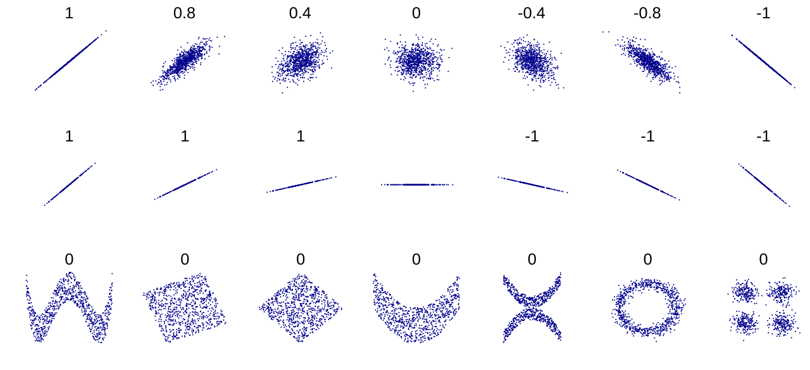

회귀분석 · 이야기 자료
회귀분석 - 상관에서 위계적 회귀까지
아버지 키가 큰 집의 아들은 키가 클까? 이 질문 하나로 회귀분석의 거의 모든 도구를 꺼내 볼 수 있다. 두 변수가 함께 움직이는 정도(상관)를 재고, 한 변수로 다른 변수의 평균을 말하는 직선(단순회귀)을 긋고, 그 직선에서 빗나간 거리(잔차)로 직선을 믿어도 되는지 묻는다. 어머니 키를 더하면 다중회귀, 딸과 아들을 함께 넣으면 더미변수, 거꾸로 키로 성별을 맞혀 보면 로지스틱 회귀가 된다. 마지막으로 임상시험 자료에서 본 공분산분석과 변수를 차례로 넣는 위계적 회귀가 모두 같은 회귀모형이라는 데까지 간다.
앞서 볼 자료: 관측오차와 정규분포에서 회귀직선까지를 그림으로 여는 측정의 흔들림에서 회귀직선까지, 최소제곱과 잔차를 직선을 직접 움직이며 보는 회귀분석 조금 깊이 보기 - 최소제곱과 잔차. 이 자료는 두 자료가 다룬 것을 짧게 되짚고 그 다음으로 넘어간다.
실습 준비 - 데이터 처리, 분석, 보고서
01–08절은 저마다 개념과 그림 뒤에 프롬프트로 따라 하기가 붙어 있다. 기본은 분석 → 보고서의 두 프롬프트다. 원자료를 들여와 다듬거나 범주의 순서를 정해야 하는 절(01절의 갈턴 원자료, 05절의 성별 factor, 07절의 임상시험 자료)에만 그 앞에 데이터 처리 프롬프트를 하나 더 둔다. 나머지 절은 01절이 정리한 자료를 그대로 읽고, 필요한 자료 고르기(아들만, 쓸 변수만)는 분석 프롬프트 첫머리에 한두 줄로 적었다.
dataset/raw/→
데이터 처리(01·05·07절) → dataset/working/→
분석 → output/*.csv, *.png→
보고서 → output/*_report.md
| 데이터 처리 (필요할 때만) | 원자료를 들여와 단위와 범주를 정리하고, 결측과 범위를 점검해 dataset/working/에 저장한다. 이 자료에서는 01절(인치 → cm), 05절(성별을 factor로 바꾸고 기준 범주 정하기), 07절(임상시험 자료, 결측 제외)이 해당한다. 고르기와 기술통계 정도라면 따로 단계를 두지 않고 분석에 합친다. |
| 분석 | 필요한 자료를 골라 모형을 적합하고 결과를 표 파일(CSV)과 그림으로 저장한다. 회귀모형이면 개별 계수와 함께 모형 전체의 검정(F 검정)과 그 유의성, 설명력(\(R^2\), 수정 \(R^2\))을 꼭 저장한다. 본문에 실제 결과 화면(콘솔 출력)을 실었다. 에이전트가 낸 숫자가 이와 같은지 아래의 확인할 것으로 대조한다. |
| 보고서 작성 | 저장된 표 파일만 읽고 결과 문단과 표를 쓴다. 회귀모형이면 첫 표는 언제나 모형의 유의성 표(\(F\), 자유도, \(p\), \(R^2\), 수정 \(R^2\))이고, 그다음이 계수표다. 본문의 결과 화면에서 보고서로 표가 출력의 어느 값이 보고서의 어느 숫자가 되는지를, 보고서 예시가 완성된 모습을 보여 준다. |
분석과 보고서를 나누는 까닭은 두 가지다. 보고서의 숫자가 모두 output/의 표 파일에서 왔으므로 어느 숫자든 출처를 되짚을 수 있고, 에이전트가 문장을 쓰면서 숫자를 지어낼 틈이 줄어든다. 그리고 보고서 단계에서 결과 화면을 보고서의 문장으로 옮기는 일을 한 번씩 직접 따라가 보게 된다. 보고서 예시를 보기 전에 결과 화면만 보고 결과 문단을 먼저 써 보면 좋다.
작업 폴더
이 자료를 위한 실습 폴더 regression을 준비해 두었다. 갈턴의 원자료 dataset/raw/Galton.tsv, 빈 scripts/·dataset/working/·output/ 폴더, 그리고 코딩 에이전트가 먼저 읽는 규칙 파일 AGENTS.md가 들어 있다. 뼈대는 GitHub 저장소의 skeleton/regression에 있다. 셋 가운데 편한 방법으로 받고, VS Code로 regression 폴더를 폴더째 연다. 그래야 R의 작업 폴더가 regression이 되어 프롬프트의 경로가 그대로 통한다.
- zip 내려받기. 위 단추로
regression.zip을 받아 원하는 곳에 푼다. - degit. Node.js가 있으면(nvm과 Node.js 설치하기) 터미널에서 폴더만 바로 받는다.
터미널
npx degit qmakescl/class-material/skeleton/regression regression
- git sparse checkout. 저장소에서 이 폴더만 골라 받는다. 폴더는
class-material/skeleton/regression에 생긴다.터미널git clone --depth 1 --filter=blob:none --sparse https://github.com/qmakescl/class-material.git cd class-material git sparse-checkout set skeleton/regression
regression/ ├── AGENTS.md # 코딩 에이전트가 따를 규칙 (R, 그림, 한글, 패키지, 보고서) ├── CLAUDE.md # Claude Code용: AGENTS.md를 불러온다 ├── scripts/ # R 스크립트 (처음엔 비어 있다) ├── dataset/ │ ├── raw/ # 원자료. 손대지 않는다 │ │ └── Galton.tsv # 갈턴(1886)의 부모와 자녀 키 │ └── working/ # 데이터 처리 단계가 저장한 분석용 자료 (.rds) └── output/ # 표(CSV), 그림(PNG), 보고서(.md)
AGENTS.md에는 이 실습에 맞춘 규칙을 모두 적어 두었다. 에이전트가 폴더를 열면 이 파일을 먼저 읽으므로, 프롬프트마다 같은 요구를 되풀이하지 않아도 된다.
- R: tidyverse로 쓰고, 모형 결과는 broom으로 표로 정리해 콘솔에 보이고
output/에 CSV로 저장한다. 회귀모형이면 계수표와 함께 모형 전체의 검정과 설명력을 반드시 저장한다. - 범주형 변수: factor로 만들고 범주의 순서(기준 범주)를 직접 정한다.
- 그림과 한글: ggplot2로만 그리고, 한글은 showtext로 Google Fonts의 Noto Sans KR을 쓴다.
- 파일 이름: 절 번호로 시작한다(
scripts/reg05_prepare.R,output/reg05_coef.csv,output/reg05_report.md). 02–06, 08절은 01절이 만든dataset/working/galton_cm.rds를 읽으므로 01절부터 차례로 한다. - 패키지: tidyverse(ggplot2, broom 포함)와 showtext. 07절만 임상시험 자료가 든 HSAUR3가 더 필요하고, 에이전트는 설치하기 전에 먼저 물어본다.
- 보고서: 아래의 보고서 규칙을 따른다. 그래서 보고서 프롬프트는 "AGENTS.md 의 보고서 규칙을 따른다" 한 줄로 충분하다.
Claude Code는 AGENTS.md 대신 CLAUDE.md를 읽기 때문에, AGENTS.md를 불러오는 한 줄짜리 CLAUDE.md도 함께 넣어 두었다.
AGENTS.md의 보고서 규칙
보고서 단계에서 에이전트가 따르는 규칙이다. APA(미국심리학회) 양식의 통계 표기를 따랐다. 실습 폴더의 AGENTS.md에 이미 들어 있으므로 따로 붙여 넣지 않아도 된다.
## 보고서 규칙 - 보고서는 output/ 에 Markdown 파일(.md)로 쓴다. - 숫자는 분석 단계가 저장한 표 파일(output/*.csv)에서만 가져온다. 표에 없는 통계량을 새로 추정하지 않는다. 표의 수를 더하거나 나누는 간단한 계산은 해도 되고, 그렇게 했다고 밝힌다. 필요한 숫자가 표에 없으면 지어내지 말고 무엇이 더 필요한지 알린다. - 통계 기호(r, t, F, p, b, M, SD, R²)는 기울임으로 쓰고 자유도는 기호 뒤 괄호에 넣는다. 예: r(463) = .39, t(463) = 9.15, F(1, 463) = 83.72, χ²(2) = 145.72. - 소수는 둘째 자리까지 쓴다. p 는 셋째 자리까지 쓰고 .001 보다 작으면 p < .001 로 쓴다. 셋째 자리로 반올림하면 .05 가 되어 판단이 가려지는 p, 둘째 자리에서 0 이 되는 값은 한 자리 더 쓴다. - 1 을 넘을 수 없는 값(r, p, R², β)은 소수점 앞의 0 을 쓰지 않는다(.39). 1 을 넘을 수 있는 값(b, 오즈비, 평균)은 0 을 쓴다(0.45). - 신뢰구간은 "95% CI [하한, 상한]" 으로 쓴다. - 회귀모형의 결과는 먼저 모형 전체를 보고한다. 선형회귀는 모형 전체의 F 검정과 그 유의성, 결정계수(R²), 수정 결정계수(수정 R²)를 쓴다. 로지스틱 회귀는 설명변수가 없는 모형과 비교한 가능도비 χ² 검정과 그 유의성, 의사 결정계수(McFadden R²)를 쓰고, 수정 R² 대신 AIC로 모형을 견준다. - 결과 문단은 무엇을 분석했나 → 모형 전체의 검정과 설명력 → 개별 효과(방향, 크기, 신뢰구간, 검정) → 해석의 순서로 쓰고, 효과의 크기를 단위(cm, 점)와 함께 말로 풀어 쓴다. 모형 전체가 유의하다는 것과 개별 변수의 효과가 유의하다는 것은 구별해 쓴다. - 보고서에는 결과 문단과 함께 표를 반드시 넣는다. 문단에 쓴 숫자는 표에도 있어야 한다. - 회귀모형의 보고서는 첫 표로 "모형의 유의성" 표를 둔다. 선형회귀는 모형마다 F, 두 자유도, p, R², 수정 R², 잔차 표준오차를, 로지스틱 회귀는 가능도비 χ², 자유도, p, 의사 R², AIC를 적는다. 모형을 여럿 비교하거나 단계를 나누었으면 모형(단계)마다 한 행씩 둔다. 이어서 회귀계수 표(b, SE, 95% CI, t 또는 z, p, 로지스틱은 오즈비)를 둔다. - 범주형 설명변수가 있으면 무엇이 기준 범주인지 밝힌다. - 표에는 "표 1-1"처럼 번호와 제목을 붙이고, 단위와 약어, 검정의 영가설은 표 아래 "주."에 적는다. 문단에서는 "(표 1-1)"처럼 표를 가리킨다. - 유의하지 않은 결과를 "효과가 없다"로 쓰지 않는다. 상관이나 회귀계수를 원인으로 쓰지 않는다.
아버지와 아들의 키 - 두 변수의 상관
프랜시스 갈턴(Francis Galton)이 1880년대 런던의 197가족에게서 모은 부모와 자녀의 키 기록이 있다. 자녀는 898명(아들 465명, 딸 433명)이고, 인치로 적힌 값을 센티미터로 바꿔 쓴다. 먼저 아버지와 아들 465쌍만 본다. 아버지의 평균 키는 175.7cm(표준편차 5.84cm), 아들은 175.8cm(6.68cm)다.
두 변수가 함께 움직이는지는 이렇게 잰다. 쌍마다 아버지 키가 평균보다 얼마나 큰지, 아들 키가 평균보다 얼마나 큰지를 구해 곱한다. 둘 다 평균보다 크거나 둘 다 작으면 곱은 양수, 한쪽만 크면 음수다. 이 곱을 평균한 것이 공분산(covariance)이다. 공분산은 단위(cm²)에 따라 크기가 달라진다. 그래서 먼저 각 값을 표준화한다. 평균을 빼고 표준편차로 나누면, 단위와 관계없이 "평균에서 표준편차 몇 개만큼 떨어져 있는가"를 나타내는 z 점수가 된다.
두 z 점수를 곱해 평균한 것이 단위가 없는 상관계수(Pearson의 \(r\))다. 표준편차를 \(n-1\)로 나눠 구했으므로 평균도 \(n-1\)로 나눈다.
곱이 양수인 쌍이 많으면 \(r\)이 양수, 음수인 쌍이 많으면 \(r\)이 음수가 된다. 한 쌍을 점 하나로 찍어 보면 \(r\)의 값은 점들의 모습으로 이렇게 읽힌다.
| 값 | 점들의 모습 | 뜻 |
|---|---|---|
| +1에 가까움 | 오른쪽 위로 올라가는 직선 가까이에 모임 | 한쪽이 크면 다른 쪽도 큰 경향이 강하다 |
| 0 근처 | 뚜렷한 방향 없이 흩어짐 | 한쪽을 알아도 다른 쪽을 짐작하기 어렵다 |
| −1에 가까움 | 오른쪽 아래로 내려가는 직선 가까이에 모임 | 한쪽이 크면 다른 쪽은 작은 경향이 강하다 |
점선은 두 변수의 평균이다. "곱의 부호로 칠하기"를 켜면 평균에서 같은 방향으로 벗어난 쌍(오른쪽 위, 왼쪽 아래)은 빨강, 반대 방향인 쌍은 청록으로 칠한다. 키는 0.1~0.5인치 단위로 기록되어 같은 값이 많아 가로로만 살짝 흩뜨려 그렸다(계산에는 원래 값을 쓴다). 아버지–어머니 쌍은 아들 수만큼 같은 점이 겹친다.
아버지–아들은 465쌍 가운데 299쌍이 같은 방향, 166쌍이 반대 방향이라 곱의 평균이 양수로 남고 \(r = 0.391\)이 된다. 어머니–아들은 \(r = 0.334\)로 비슷하고, 아버지–어머니는 \(r = 0.106\)으로 거의 0이다. 키 큰 남자가 키 큰 여자와 짝을 짓는 경향이 이 자료에서는 약했다는 뜻이고, 04절의 다중회귀에서 이 사실이 다시 쓰인다.
| 범위 | \(-1 \le r \le 1\). 모든 점이 한 직선 위에 있을 때만 \(r = \pm 1\)이고, 0은 직선 관계가 없을 때다. |
| 단위가 없다 | 키를 인치로 재든 cm로 재든 \(r\)은 같다. z 점수로 바꾼 뒤 계산하기 때문이다. |
| 대칭이다 | 아버지–아들의 \(r\)과 아들–아버지의 \(r\)은 같다. 어느 쪽이 원인인지 말하지 않는다. 02절의 회귀는 이 대칭이 깨진다. |
| 기울기의 크기가 아니다 | 점이 직선 위에 있기만 하면 직선이 가파르든 완만하든 \(r = \pm 1\)이다. \(r\)은 점이 직선에 얼마나 가까이 모였는지를 잰다. |
| 직선 관계만 잰다 | U자처럼 휘어진 관계는 강해도 \(r\)이 0에 가까울 수 있다. 숫자보다 산점도를 먼저 본다. |
| \(r^2\)의 뜻 | \(y\)의 흩어짐(분산) 가운데 \(x\)에 대한 직선으로 설명되는 비율이다. 아버지–아들 키는 \(r^2 = 0.153\)으로, 약 15%다. 02절의 결정계수 \(R^2\)와 같은 값이다. |

출처: DenisBoigelot(원 업로더 Imagecreator), 「Correlation examples2.svg」, 위키미디어 공용, CC0 1.0. 원본 SVG를 위키미디어가 변환한 PNG를 사용했다.
"몇 이상이면 강한 상관"이라는 기준은 분야와 목적마다 다르다. 부호(방향)와, 0과 1 가운데 어디에 가까운지를 먼저 읽는다.
상관계수의 검정
465쌍은 표본이다. 모집단의 상관계수 \(\rho\)가 0인데 우연히 0.391이 나왔을 수 있는지는 \(t\) 검정으로 본다. 영가설은 \(H_0: \rho = 0\)이다.
상관은 인과가 아니다. 아버지 키와 아들 키의 상관은 유전이라는 원인을 떠올리게 하지만, 같은 집에서 같은 음식을 먹고 자란 환경도 두 키를 함께 움직인다. 상관계수는 "함께 움직인다"까지만 말한다. 그리고 \(r = 0.391\)은 "강하다"보다 "뚜렷하지만 흩어짐이 크다"에 가깝다. 02절에서 보듯 아버지 키로 아들 키의 흩어짐을 15%쯤만 설명한다.
프롬프트로 따라 하기 · 상관
데이터 처리 → 분석 → 보고서 작성의 순서로 프롬프트 세 개를 차례로 준다. 작업 폴더와 보고서 규칙은 00 실습 준비, 만들어진 R 코드와 전체 출력은 부록 01에 있다.
① 데이터 처리자료를 들여와 다듬는다
dataset/raw/Galton.tsv 는 갈턴이 1886년에 모은 부모와 자녀의 키 자료이고 단위는 인치다. 원자료는 고치지 않는다. 이 자료를 분석용으로 정리하는 R 스크립트 scripts/reg01_prepare.R 을 써서 실행해 줘. 1. 아버지, 어머니, 자녀의 키를 센티미터로 바꾸고, 성별은 딸과 아들 두 범주로 두되 딸을 기준 범주로 한다. 2. 행 수와 가족 수, 성별 인원, 키 세 변수의 결측 수, 키 세 변수의 최솟값과 최댓값을 보여 줘. 3. 정리한 자료는 다음 절들에서도 쓸 수 있게 dataset/working/galton_cm.rds 로 저장해 줘.
확인할 것
- 898행, 197가족, 딸 433명과 아들 465명인가?
- 세 키에 결측이 없는가?
- 키가 142~201cm 사이인가? 56~79처럼 나오면 인치를 그대로 둔 것이다.
② 분석모형을 적합하고 결과를 표 파일로 저장한다
dataset/working/galton_cm.rds 에서 아들만 골라 상관분석을 하는 R 스크립트 scripts/reg01_correlation.R 을 써서 실행해 줘. 1. 아버지 키, 어머니 키, 아들 키의 사람 수, 평균, 표준편차와 세 변수의 상관행렬을 한 표로 만들어 output/reg01_table1.csv 로 저장해 줘. 2. 아버지–아들, 어머니–아들, 아버지–어머니 세 쌍마다 상관계수가 0인지 검정해서 상관계수, t, 자유도, p, 95% 신뢰구간을 한 표로 만들어 output/reg01_cortest.csv 로 저장해 줘. 3. 아버지 키와 아들 키의 산점도에 두 변수의 평균을 점선으로 그어 output/reg01_scatter.png 로 저장해 줘. 아버지 키는 같은 값이 많으니 가로로만 조금 흩뜨려 줘.
# A tibble: 3 × 7 변수 n M SD 아버지 어머니 아들 <fct> <int> <dbl> <dbl> <dbl> <dbl> <dbl> 1 아버지 465 175.6872 5.841820 1 0.1063346 0.3913174 2 어머니 465 162.5731 5.929065 0.1063346 1 0.3341309 3 아들 465 175.8412 6.684249 0.3913174 0.3341309 1 # A tibble: 3 × 7 쌍 r t df p ci_low ci_high <chr> <dbl> <dbl> <int> <dbl> <dbl> <dbl> 1 아버지–아들 0.3913174 9.149788 463 1.824016e-18 0.3114667 0.4656805 2 어머니–아들 0.3341309 7.628049 463 1.367163e-13 0.2508178 0.4125305 3 아버지–어머니 0.1063346 2.301094 463 2.182968e- 2 0.01555110 0.1953793
③ 보고서 작성결과 화면의 숫자를 보고서의 문장과 표로 옮긴다
output/reg01_table1.csv, output/reg01_cortest.csv 와 그림 output/reg01_scatter.png 를 보고 output/reg01_report.md 에 상관분석의 결과 보고를 써 줘. AGENTS.md 의 보고서 규칙을 따른다. 1. 무엇을 분석했는지(누구, 몇 명, 단위)를 한 문장으로 쓴다. 2. 결과 문단: 아버지–아들의 상관을 중심으로 방향, 크기, 검정, 신뢰구간을 쓰고 나머지 두 쌍을 짧게 덧붙인다. 3. 표 1-1 기술통계와 상관행렬: 세 변수의 평균, 표준편차, 상관계수. 상관행렬은 대각선 아래만 채우고 유의수준을 별표로 표시한다. 4. 표 1-2 상관계수의 검정: 세 쌍을 행으로, r, 95% 신뢰구간, t, 자유도, p 를 열로 둔다. 5. 해석: 상관이 원인을 말해 주지 않는다는 점, 아버지–어머니 쌍은 같은 부모가 아들 수만큼 겹쳐 세어졌다는 점을 한두 문장으로 적는다.
| 결과 화면에서 읽은 값 | 보고서에 쓰는 꼴 |
|---|---|
r 0.3913174 | \(r = .39\). 1을 넘을 수 없는 값이라 소수점 앞의 0을 쓰지 않는다. |
df 463 | \(r(463)\). 자유도는 기호 바로 뒤 괄호에 넣는다. |
p 1.824016e-18 | \(p < .001\). e-18은 \(\times 10^{-18}\)이다. .001보다 작으면 등호 대신 부등호로 쓴다. |
ci_low 0.3114667, ci_high 0.4656805 | 95% CI [.31, .47] |
p 2.182968e- 2 (아버지–어머니) | \(p = .022\). e- 2는 \(\times 10^{-2}\)이다. |
M 175.6872, SD 5.841820 | \(M = 175.69\), \(SD = 5.84\) (cm) |
보고서 예시 · output/reg01_report.md
갈턴(1886)의 자료에서 아들 465명과 그 부모의 키(cm)를 분석하였다(표 1-1). 아버지 키와 아들 키는 정적 상관을 보였다, \(r(463) = .39\), 95% CI [.31, .47], \(p < .001\). 어머니 키와 아들 키의 상관도 비슷하였으나, \(r(463) = .33\), 95% CI [.25, .41], \(p < .001\), 아버지 키와 어머니 키의 상관은 작았다, \(r(463) = .11\), 95% CI [.02, .20], \(p = .022\)(표 1-2). 아버지–어머니 쌍은 같은 부모가 아들 수만큼 반복해 세어진 값이라 이 검정은 실제보다 유의하게 나올 수 있다. 상관은 두 키가 함께 움직인다는 것을 보일 뿐 그 원인(유전, 같은 집의 환경)을 가려 주지는 않는다.
| 변수 | \(M\) | \(SD\) | 1 | 2 |
|---|---|---|---|---|
| 1. 아버지 키 | 175.69 | 5.84 | — | |
| 2. 어머니 키 | 162.57 | 5.93 | .11* | — |
| 3. 아들 키 | 175.84 | 6.68 | .39*** | .33*** |
주. 단위는 cm. * \(p < .05\). *** \(p < .001\).
| 쌍 | \(r\) | 95% CI | \(t(463)\) | \(p\) |
|---|---|---|---|---|
| 아버지–아들 | .39 | [.31, .47] | 9.15 | < .001 |
| 어머니–아들 | .33 | [.25, .41] | 7.63 | < .001 |
| 아버지–어머니 | .11 | [.02, .20] | 2.30 | .022 |
주. 영가설은 모집단 상관계수 \(\rho = 0\)이다. 아버지–어머니 쌍은 같은 부모가 아들 수만큼 겹쳐 세어졌다.
표의 숫자를 그대로 옮기지 않은 것이 하나 있다. 아버지–어머니의 \(p = .022\)가 부풀었다는 문장은 해석이다. 가족 197쌍을 한 번씩만 세어 다시 검정하면 \(r(195) = .10\), \(p = .160\)이다. 이런 확인이 필요하면 보고서 단계가 아니라 분석 단계로 돌아가 표를 하나 더 만들게 한다.
단순선형 회귀분석 - 아버지 키로 아들 키를 말하기
상관이 "함께 움직이는 정도"라면 회귀는 방향이 있는 질문이다. 아버지 키(\(x\), 설명변수)를 알 때 아들 키(\(Y\), 반응변수)가 평균적으로 얼마인가. 측정의 흔들림에서 회귀직선까지에서 본 대로 회귀분석은 자료를 "직선 위의 가운데 + 종 모양의 흔들림"으로 본다.
\(\beta_0\)(절편)과 \(\beta_1\)(기울기)은 잔차 제곱합을 가장 작게 하는 값으로 추정한다(최소제곱법, 왜 하필 제곱인가). 그 답은 01절의 상관계수로 바로 쓸 수 있다.
기울기는 상관계수에 "두 변수의 흩어짐의 비"를 곱한 것이다. 그래서 \(r\)이 0이면 기울기도 0이고, \(r\)의 부호가 곧 기울기의 부호다. 다른 점은 방향이다.
검은 실선은 아버지 키로 아들 키의 평균을 예측하는 직선, 주황 실선은 아들 키로 아버지 키의 평균을 예측하는 직선을 같은 축에 그린 것이다. 두 직선은 평균점(◆)에서 만난다. 회색 점선은 "아들 키 = 아버지 키"다.
두 직선의 기울기(0.448과 0.342)를 곱하면 \(r^2 = 0.153\)이 된다. 상관은 하나인데 회귀직선은 둘이다. 어느 변수를 예측하느냐는 분석하는 사람이 정하는 질문이고, 회귀는 그 질문을 식에 새겨 넣는다. 두 직선 모두 "아들 = 아버지" 선보다 평평하다는 것이 갈턴이 "평균으로의 회귀"라고 부른 현상이다.
R의 출력에서 무엇을 읽나
| 항 | 추정값 | 표준오차 | \(t\) | \(p\) | 95% 신뢰구간 |
|---|---|---|---|---|---|
| 절편 | 97.18 | 8.60 | 11.30 | < .001 | [80.27, 114.08] |
| 아버지 키 | 0.448 | 0.049 | 9.15 | < .001 | [0.352, 0.544] |
| 기울기 0.448 | 아버지 키가 1cm 큰 집의 아들은 평균적으로 0.45cm 크다. 신뢰구간 [0.352, 0.544]는 0을 포함하지 않는다. |
| \(t = 9.15\) | 영가설 \(H_0: \beta_1 = 0\)의 검정. 01절 상관계수 검정의 \(t\)와 정확히 같다. 단순회귀에서 "기울기가 0인가"와 "상관이 0인가"는 같은 질문이다. |
| 잔차 표준오차 6.16cm | 직선 둘레로 아들 키가 흩어진 정도 \(\hat\sigma\). 자유도는 \(n - 2 = 463\)이다. 아버지 키를 모를 때의 흩어짐(아들 키의 표준편차 6.68cm)보다 조금 줄었다. |
| \(R^2 = 0.153\) 수정 \(R^2 = 0.151\) | 아들 키의 변동 가운데 아버지 키로 설명되는 몫(\(R^2\)의 정체). 단순회귀에서는 \(r^2\)과 같다(\(0.391^2 = 0.153\)). |
| \(F(1, 463) = 83.7\) \(p < .001\) | 모형 전체의 검정. 영가설은 "모든 기울기가 0", 곧 설명변수가 아들 키를 전혀 설명하지 못한다는 것이고, 이를 기각하므로 모형이 유의하다. 설명변수가 하나뿐이라 \(t^2\)과 같다(\(9.15^2 = 83.7\)). 설명변수가 여럿이면 이 검정과 개별 계수의 \(t\) 검정이 서로 다른 질문이 된다. |
프롬프트로 따라 하기 · 단순회귀
01절에서 정리한 자료를 그대로 쓰므로 데이터 처리 단계를 따로 두지 않았다. 필요한 자료 고르기와 기술통계는 분석 프롬프트 첫머리에 함께 적었다. 분석 → 보고서 작성의 두 프롬프트를 차례로 준다. 작업 폴더와 보고서 규칙은 00 실습 준비, 만들어진 R 코드와 전체 출력은 부록 02에 있다.
① 분석모형을 적합하고 결과를 표 파일로 저장한다
dataset/working/galton_cm.rds(01절에서 정리한 자료)에서 아들만 골라, 아버지 키가 아들 키를 설명하는 단순 회귀분석을 하는 R 스크립트 scripts/reg02_simple.R 을 써서 실행해 줘. 1. 아버지 키와 아들 키 각각의 사람 수, 평균, 표준편차, 최솟값, 최댓값을 표로 만들어 output/reg02_desc.csv 로 저장해 줘. 2. 계수표(추정값, 표준오차, t, p, 95% 신뢰구간)를 output/reg02_coef.csv 로 저장해 줘. 3. 모형 전체의 결정계수, 수정 결정계수, 잔차 표준오차, F 검정(통계량, 두 자유도, p), 사람 수를 한 줄 표로 만들어 output/reg02_fit.csv 로 저장해 줘. 4. 산점도에 회귀직선과 그 95% 신뢰띠를 겹쳐 output/reg02_line.png 로 저장해 줘.
# A tibble: 2 × 6
변수 n M SD 최소 최대
<chr> <int> <dbl> <dbl> <dbl> <dbl>
1 father 465 175.6872 5.841820 157.48 199.39
2 son 465 175.8412 6.684249 152.4 200.66
# A tibble: 2 × 7
term estimate std.error statistic p.value conf.low conf.high
<chr> <dbl> <dbl> <dbl> <dbl> <dbl> <dbl>
1 (Intercept) 97.17764 8.602050 11.29703 2.642076e-26 80.27374 114.0815
2 father 0.4477479 0.04893533 9.149788 1.824016e-18 0.3515851 0.5439108
# A tibble: 1 × 8
r.squared adj.r.squared sigma statistic df df.residual p.value nobs
<dbl> <dbl> <dbl> <dbl> <dbl> <int> <dbl> <int>
1 0.1531293 0.1513002 6.157859 83.71863 1 463 1.824016e-18 465확인할 것
- 아들이 465명이고 아버지 키의 범위가 157.5~199.4cm인가? 이 범위가 예측을 믿을 수 있는 구간이다.
- 모형 전체의 F가 83.72, 결정계수가 .15인가?
② 보고서 작성결과 화면의 숫자를 보고서의 문장과 표로 옮긴다
output/reg02_desc.csv, output/reg02_coef.csv, output/reg02_fit.csv 와 그림 output/reg02_line.png 를 보고 output/reg02_report.md 에 단순회귀의 결과 보고를 써 줘. AGENTS.md 의 보고서 규칙을 따른다. 1. 결과 문단: 모형 전체의 F 검정과 그 유의성, 결정계수, 수정 결정계수를 먼저 쓴다. 결정계수는 "아들 키 분산의 몇 %를 설명하는가"로 풀어 쓴다. 이어서 기울기를 "아버지 키가 1cm 클 때 아들 키가 평균 몇 cm 큰가"로 풀어 쓰고 신뢰구간과 검정을 붙인다. 절편을 해석하지 않는 까닭을 한 문장으로 쓴다. 2. 표 2-1 모형의 유의성: F, 두 자유도, p, 결정계수, 수정 결정계수, 잔차 표준오차를 한 행으로. 3. 표 2-2 회귀계수: 절편과 아버지 키의 b, SE, 95% CI, t, p. 4. 기술통계의 아버지 키 범위를 들어 이 직선으로 예측해도 되는 범위를 적는다.
| 결과 화면에서 읽은 값 | 보고서에 쓰는 꼴 |
|---|---|
statistic 83.71863, df 1, df.residual 463 | \(F(1, 463) = 83.72\). 자유도 두 개를 순서대로 쓴다. |
p.value 1.824016e-18 (모형 전체) | \(p < .001\). 모형이 유의하다. "기울기가 모두 0", 곧 설명변수가 아무 쓸모없다는 영가설을 기각한다. |
r.squared 0.1531293 | \(R^2 = .15\). 아들 키 분산의 15%를 설명한다. |
adj.r.squared 0.1513002 | 수정 \(R^2 = .15\). 설명변수 수만큼 벌점을 준 값이다. 설명변수가 하나이고 표본이 커서 \(R^2\)와 거의 같다. |
father estimate 0.4477479 | \(b = 0.45\). 1을 넘을 수 있는 값이라 0을 쓴다. 단위는 cm당 cm |
conf.low 0.3515851, conf.high 0.5439108 | 95% CI [0.35, 0.54] |
father statistic 9.149788 | \(t(463) = 9.15\). \(t\)의 자유도는 잔차의 자유도(df.residual)다. |
sigma 6.157859 | 잔차 표준오차 6.16cm |
(Intercept) 97.17764 | 보고는 하되 해석하지 않는다. 아버지 키 0cm일 때의 값이다. |
보고서 예시 · output/reg02_report.md
아버지 키로 아들 키를 설명하는 단순회귀모형은 유의하였다, \(F(1, 463) = 83.72\), \(p < .001\), \(R^2 = .15\), 수정 \(R^2 = .15\)(표 2-1). 아들 키 분산의 15%가 아버지 키로 설명되었다. 아버지 키가 1cm 클 때 아들 키는 평균 0.45cm 컸다, \(b = 0.45\), 95% CI [0.35, 0.54], \(t(463) = 9.15\), \(p < .001\)(표 2-2). 회귀직선 둘레의 잔차 표준오차는 6.16cm였다. 절편(97.18)은 아버지 키가 0cm일 때의 값이라 해석하지 않는다. 자료의 아버지 키는 157.5~199.4cm이므로 이 범위 밖의 예측은 자료가 뒷받침하지 않는다.
| 모형 | \(F\) | \(df\) | \(p\) | \(R^2\) | 수정 \(R^2\) | 잔차 표준오차 |
|---|---|---|---|---|---|---|
| 아버지 키 → 아들 키 | 83.72 | 1, 463 | < .001 | .15 | .15 | 6.16 |
주. 영가설은 "기울기 = 0"(아버지 키가 아들 키를 전혀 설명하지 못한다)이다. 잔차 표준오차의 단위는 cm.
| 변수 | \(b\) | \(SE\) | 95% CI | \(t\) | \(p\) |
|---|---|---|---|---|---|
| 절편 | 97.18 | 8.60 | [80.27, 114.08] | 11.30 | < .001 |
| 아버지 키 | 0.45 | 0.05 | [0.35, 0.54] | 9.15 | < .001 |
주. \(t\)의 자유도는 463이다.
결과 화면의 숫자는 일곱 자리까지 나오지만 보고서는 둘째 자리면 충분하다. 반올림은 마지막에 한 번만 한다. 0.4477을 0.448로, 다시 0.45로 두 번 반올림하지 않는다.
잔차 분석 - 회귀의 가정을 점검한다
02절의 표준오차, \(t\), \(p\), 신뢰구간은 모두 모형의 \(\varepsilon_i \sim N(0, \sigma^2)\)이 맞다는 전제에서 계산된다. 이 전제를 풀어 쓰면 네 가지 가정이 되고, 머리글자를 따서 LINE이라 부르기도 한다.
잔차란 무엇인가
가정은 모두 오차 \(\varepsilon_i\)에 대한 것인데, 오차는 볼 수 없다. 그래서 그 추정값인 잔차(residual)로 점검한다. 잔차는 한 사람마다 "실제 값 − 직선이 말한 값"이다.
| 아들 | 아버지 키 \(x\) | 아들 키 \(y\) | 직선이 말한 키 \(\hat y\) | 잔차 \(e\) | 표준화 잔차 |
|---|---|---|---|---|---|
| 72번 가족 | 177.80 | 200.66 | 176.79 | +23.87 | +3.88 |
| 109번 가족 | 176.53 | 152.40 | 176.22 | −23.82 | −3.87 |
| 1번 가족 | 199.39 | 185.93 | 186.45 | −0.53 | −0.09 |
72번 가족의 아들은 아버지 키로 보면 176.8cm쯤이어야 하는데 실제로는 200.7cm라서 직선보다 23.9cm 위에 있다. 109번 가족의 아들은 거의 같은 아버지 키인데 직선보다 23.8cm 아래에 있다. 둘은 이 자료에서 직선에서 가장 멀리 벗어난 두 아들이다. 1번 가족의 아들은 직선 바로 옆에 있다. 아래 그림에서 잔차를 네 가지로 보자.
- 세로로 잰 거리다. 점에서 직선까지의 가장 짧은 거리가 아니라, 같은 \(x\)에서 위아래로 잰 거리다. 맞히려는 것이 \(y\)이기 때문이다(편차 하나를 들여다본다). 양수면 점이 직선 위, 음수면 아래에 있다.
- 오차와 잔차는 다르다. 오차 \(\varepsilon_i = y_i - (\beta_0 + \beta_1 x_i)\)는 모집단의 "참 직선"에서 잰 거리라서 알 수 없다. 잔차는 자료로 추정한 직선에서 잰 거리다. 직선을 바로 이 자료에 맞췄으므로 잔차는 오차보다 조금 덜 흩어지고, 그만큼을 메우려고 \(\hat\sigma\)를 구할 때 \(n\)이 아니라 \(n - 2\)로 나눈다.
- 최소제곱이 미리 정해 두는 것. 최소제곱 직선의 잔차는 합이 정확히 0이고 \(x\)와의 상관도 0이다. 그러니 잔차의 평균이나 \(x\)와의 직선 관계는 볼 필요가 없다. 진단에서 보는 것은 모양, 곧 휘어짐, 폭의 변화, 동떨어진 점, 묶음이다.
- 표준화 잔차. 잔차를 그 잔차의 표준편차로 나눈 값 \(e_i / (\hat\sigma\sqrt{1 - h_i})\)다. cm 단위가 없어져 "±2를 넘으면 드물고 ±3을 넘으면 아주 드물다"는 정규분포의 기준으로 읽을 수 있다. 72번과 109번 가족의 아들은 ±3.9로, 465명 가운데 이 정도는 정규분포라면 거의 나오지 않는다.
- 지렛값 \(h_i\). \(x\)가 평균에서 멀수록 커지는 값으로, 그 점이 직선을 자기 쪽으로 끌어당길 수 있는 힘이다. 1번 가족의 아버지(199.4cm)는 자료에서 가장 큰 아버지라 지렛값이 0.038로 평균(0.0043)의 약 9배다. 그래도 아들이 직선 바로 옆에 있어 직선을 움직이지 않는다. 지렛값이 크고 잔차도 클 때 직선을 끌고 가는 영향점이 되고, 이를 한 숫자로 잰 것이 아래의 Cook의 거리다.
잔차 그림이 말해 주는 것: 네 가지 모양
가정이 맞다면 잔차에는 아무 패턴도 남지 않아야 한다. 직선이 담을 수 있는 것은 직선이 이미 가져갔고, 남은 것은 우연한 흔들림뿐이어야 하기 때문이다. 패턴이 남았다면 모형이 놓친 것이 있다는 뜻이다. 회귀분석 조금 깊이 보기의 잔차 진단에서는 네 가지 데이터 A–D로 그 패턴의 전형을 보았다. 네 데이터 모두 \(R^2\)가 0.72~0.95로 높아서 산점도와 \(R^2\)만으로는 어느 쪽이 문제인지 가려내기 어렵지만, 잔차 그림에서는 바로 드러난다.
| 모양 | 그림에서 보이는 것 | 어긋난 가정 | 그대로 두면 | 대응 |
|---|---|---|---|---|
| A · 기준 | 0선 위아래로 고르게 흩어지고 띠가 수평이다 | 없음 | — | — |
| B · 곡선 | 가운데가 솟고 양 끝이 내려가는(또는 그 반대) 활 모양 | 선형성 | 구간마다 예측이 한쪽으로 치우친다. 기울기 하나로 요약한 것 자체가 틀린다 | \(x\)를 \(\log x\), \(\sqrt{x}\)로 바꾸거나 \(x^2\) 항을 더한다 |
| C · 부채꼴 | 적합값이 커질수록 잔차의 폭이 벌어진다 | 등분산성 | 계수는 쓸 만하지만 표준오차가 틀려 신뢰구간과 \(p\)가 어긋난다 | \(y\)를 \(\log y\), \(\sqrt{y}\)로 바꾸거나 이분산에 강건한 표준오차를 쓴다 |
| D · 이상치 | 한두 점이 홀로 멀리 떨어지고, 나머지 잔차가 한쪽으로 밀린다 | 정규성(두꺼운 꼬리), 또는 자료 오류 | 직선이 그 점에 끌려가고 \(\hat\sigma\)가 부풀어 모든 검정이 무뎌진다 | 입력 오류를 먼저 확인하고, 그 점을 넣은 결과와 뺀 결과를 함께 보고한다 |
여기에 하나가 더 있다. 잔차를 시간 순서나 묶음(가족, 학교, 병원)별로 늘어놓았을 때 이웃한 잔차끼리 닮았다면 독립성이 깨진 것이다. 잔차 대 적합값 그림에는 이것이 보이지 않으므로 자료가 모인 방식을 보고 따로 그려야 한다. 갈턴 자료에서는 같은 집 형제가 그런 묶음이다.
아래 그림은 갈턴 자료의 잔차를 네 가지로 그린다. 잔차 대 적합값으로 B와 C를, 정규 Q-Q로 D와 꼬리의 두께를, 척도–위치로 C를 한 번 더, 형제끼리로 독립성을 본다.
| 가정 | 무엇을 보나 | 이 자료에서 | 판단 |
|---|---|---|---|
| 선형성 | 잔차 대 적합값 그림의 경향선이 0에서 수평인가 | 경향선이 0 근처에서 거의 평평하다 | 만족 |
| 등분산성 | 잔차의 폭이 적합값에 따라 벌어지거나 좁아지나(척도–위치 그림, Breusch–Pagan 검정) | 폭이 고르다. Breusch–Pagan \(\chi^2(1) = 0.36\), \(p = .548\) | 만족 |
| 정규성 | Q-Q 그림의 점이 기준선을 따르나(Shapiro–Wilk 검정) | 양 끝 몇 점만 조금 벗어난다. \(W = 0.994\), \(p = .0499\) | 대체로 만족 |
| 독립성 | 같은 묶음(가족, 시간 순서) 안의 잔차가 서로 닮았나 | 형제의 잔차가 닮았다. 가족에 따른 차이 \(F(132, 292) = 2.18\), \(p < .001\) | 위반 |
정규성의 \(p = .0499\)를 어떻게 읽나. 465명쯤 되면 정규성 검정은 아주 작은 어긋남에도 유의하게 나온다. 그래서 검정의 \(p\)보다 Q-Q 그림에서 어디가 얼마나 벗어났는지를 본다. 표준화 잔차가 ±3을 넘는 아들은 4명으로, 정규분포라면 기대되는 1.3명보다 조금 많은 정도다. 직선에서 ±1, ±2 표준편차 안에 든 아들은 68.8%, 95.9%로 정규분포의 68%, 95%와 가깝다. 또 표본이 크면 계수의 표집분포는 오차가 정규분포가 아니어도 정규분포에 가까워진다. 이 정도는 결론을 바꾸지 않는다.
이상치와 영향점. 크게 빗나간 점(이상치)과 직선을 끌어당기는 점(영향점)은 다르다. 한 점을 뺐을 때 계수가 얼마나 움직이는지를 재는 Cook의 거리는 가장 큰 값이 0.05로, 흔히 쓰는 기준 1(엄격하게는 0.5)보다 훨씬 작다. 이 자료에는 직선을 혼자 끌고 가는 점이 없다.
독립성은 그림보다 자료가 모인 방식으로 판단한다. 갈턴의 아들 465명은 173가족에서 왔고, 아들이 둘 이상인 가족이 133가족(425명)이다. 같은 집 형제는 아버지 키로 설명되지 않는 것(어머니, 집안의 다른 유전자, 같은 식탁)을 함께 나눈다. 그래서 형 잔차가 크면 동생 잔차도 큰 경향이 있다. 잔차로 추정한 가족 안 상관은 약 0.27이다.
독립성이 깨지면 계수는 크게 틀리지 않아도 표준오차가 실제보다 작게 나온다. 465명이 서로 독립인 것처럼 계산했지만, 정보의 양은 그보다 적기 때문이다. 가족마다 아들 키를 평균해 173가족을 관측 하나씩으로 다시 계산하면 기울기는 0.445로 거의 같지만 표준오차는 0.049에서 0.057로 커진다. 묶음이 있는 자료는 가족 단위로 요약하거나, 군집 표준오차(cluster-robust standard error)나 다층모형(혼합효과모형)을 쓴다.
프롬프트로 따라 하기 · 잔차 분석
01절에서 정리한 자료를 그대로 쓰므로 데이터 처리 단계를 따로 두지 않았다. 필요한 자료 고르기와 기술통계는 분석 프롬프트 첫머리에 함께 적었다. 분석 → 보고서 작성의 두 프롬프트를 차례로 준다. 작업 폴더와 보고서 규칙은 00 실습 준비, 만들어진 R 코드와 전체 출력은 부록 03에 있다.
① 분석모형을 적합하고 결과를 표 파일로 저장한다
dataset/working/galton_cm.rds 에서 아들만 골라 아버지 키가 아들 키를 설명하는 단순회귀를 다시 적합하고, 그 잔차로 회귀의 가정을 점검하는 R 스크립트 scripts/reg03_diagnostics.R 을 써서 실행해 줘. 1. 아들마다 적합값, 잔차, 표준화 잔차, 지렛값, Cook의 거리를 구해 둔다. 2. 가로축이 적합값, 세로축이 잔차인 그림에 0 기준선과 잔차의 경향을 보여 주는 매끄러운 곡선을 겹쳐 output/reg03_resid_fitted.png 로 저장해 줘. 적합값은 같은 값이 많으니 가로로만 조금 흩뜨려 줘. 3. 표준화 잔차의 정규 Q-Q 그림을 기준선과 함께 output/reg03_qq.png 로 저장해 줘. 4. 정규성(Shapiro-Wilk 검정), 등분산성(Breusch-Pagan 검정, 추가 패키지 없이), 독립성(아들이 둘 이상인 가족만으로 잔차가 가족에 따라 다른지 보는 일원분산분석) 세 검정의 통계량, 자유도, p를 한 표로 만들어 output/reg03_checks.csv 로 저장해 줘. 5. 표준화 잔차의 절댓값이 2를 넘는 수와 3을 넘는 수, Cook의 거리 최댓값, 지렛값 최댓값을 output/reg03_extremes.csv 로 저장해 줘.
# A tibble: 3 × 4
점검 통계량 자유도 p
<chr> <dbl> <chr> <dbl>
1 정규성: Shapiro–Wilk 0.9936929 — 4.990748e-2
2 등분산성: Breusch–Pagan 0.3604024 1 5.482829e-1
3 독립성: 가족에 따른 잔차 차이 2.182218 132, 292 2.161843e-8
# A tibble: 1 × 5
n over_2 over_3 max_cook max_hat
<int> <int> <int> <dbl> <dbl>
1 465 20 4 0.05014870 0.03763078확인할 것
- 표준화 잔차의 절댓값이 3을 넘는 아들이 4명, Cook의 거리 최댓값이 0.05 근처인가?
- 독립성 검정의 자유도가 132, 292인가? 아들이 둘 이상인 133가족, 425명으로 계산했다는 뜻이다.
② 보고서 작성결과 화면의 숫자를 보고서의 문장과 표로 옮긴다
output/reg03_checks.csv, output/reg03_extremes.csv 와 그림 output/reg03_resid_fitted.png, output/reg03_qq.png 를 보고 output/reg03_report.md 에 회귀 가정의 점검 결과를 써 줘. AGENTS.md 의 보고서 규칙을 따른다. 1. 결과 문단: 선형성, 등분산성, 정규성, 영향점, 독립성마다 무엇으로 보았고 결과가 어떤지 한두 문장씩 쓴다. 2. 선형성은 검정 없이 그림으로 판단했으므로, 그림에서 무엇을 보았는지 말로 쓰고 그림으로 판단했다고 밝힌다. 3. 정규성 검정의 p가 .05 근처라면 표본 크기와 Q-Q 그림, 크게 벗어난 점의 수를 함께 들어 판단한다. 4. 표 3 회귀 가정의 점검: 선형성, 등분산성, 정규성, 영향점, 독립성을 행으로, 점검 방법, 결과(통계량, 자유도, p 또는 그림에서 본 것), 판단을 열로 둔다. 5. 깨진 가정이 있으면 그것이 단순회귀 결과(특히 표준오차와 p)에 어떤 영향을 주는지, 어떤 대안이 있는지 쓴다.
| 결과 화면에서 읽은 값 | 보고서에 쓰는 꼴 |
|---|---|
Shapiro–Wilk 0.9936929, p 4.990748e-2 | \(W = 0.99\), \(p = .0499\). 셋째 자리로 반올림하면 .050이 되어 .05보다 작다는 사실이 가려지므로 넷째 자리까지 쓴다. |
Breusch–Pagan 0.3604024, 자유도 1 | \(\chi^2(1) = 0.36\), \(p = .548\) |
2.182218, 132, 292, p 2.161843e-8 | \(F(132, 292) = 2.18\), \(p < .001\) |
over_3 4, n 465 | 표준화 잔차의 절댓값이 3을 넘은 아들 4명(0.9%). 비율은 표의 두 수로 계산했다. |
max_cook 0.05014870 | Cook의 거리 최댓값 0.05 |
| 그림 두 장 | 선형성의 근거. 숫자가 없으니 "그림 3-1에서 …"처럼 그림을 가리킨다. |
보고서 예시 · output/reg03_report.md
잔차 대 적합값 그림에서 잔차는 0을 중심으로 고르게 흩어졌고 뚜렷한 곡선 모양이 없어, 그림으로 판단할 때 선형성 가정은 만족하였다(그림 3-1). 등분산성도 만족하였다, Breusch–Pagan \(\chi^2(1) = 0.36\), \(p = .548\). 잔차의 정규성 검정은 경계에 있었으나, \(W = 0.99\), \(p = .0499\), Q-Q 그림에서 벗어난 점은 양 끝 일부였고(표준화 잔차의 절댓값이 3을 넘은 아들 4명, 0.9%) 표본이 커서(\(n = 465\)) 결론에 영향을 줄 정도는 아닌 것으로 판단하였다. Cook의 거리는 최댓값이 0.05로 직선을 크게 움직이는 관측은 없었다. 그러나 같은 가족 형제의 잔차는 서로 닮아 독립성 가정이 깨졌다, \(F(132, 292) = 2.18\), \(p < .001\)(표 3). 따라서 단순회귀의 표준오차와 \(p\)값은 실제보다 작게 추정되었을 수 있으며, 가족 단위 분석이나 군집 표준오차로 다시 확인할 필요가 있다.
| 가정 | 점검 방법 | 결과 | 판단 |
|---|---|---|---|
| 선형성 | 잔차 대 적합값 그림 | 경향선이 0 근처에서 평평함 | 만족 |
| 등분산성 | Breusch–Pagan 검정 | \(\chi^2(1) = 0.36\), \(p = .548\) | 만족 |
| 정규성 | Shapiro–Wilk 검정, Q-Q 그림 | \(W = 0.99\), \(p = .0499\); |표준화 잔차| > 3: 4명(0.9%) | 대체로 만족 |
| 영향점 | Cook의 거리 | 최댓값 0.05 | 없음 |
| 독립성 | 가족별 잔차의 일원분산분석(아들 2명 이상 133가족) | \(F(132, 292) = 2.18\), \(p < .001\) | 위반 |
주. 선형성은 그림으로 판단하였다. 0.9%는 4 / 465로 계산하였다.
가정 점검의 보고는 "모두 만족하였다" 한 줄로 끝내기 쉽다. 결과 화면에서 경계에 걸린 값(정규성)과 깨진 값(독립성)을 찾아, 그것이 앞의 결론을 얼마나 흔드는지까지 쓰는 것이 이 보고의 핵심이다.
다중선형 회귀분석 - 어머니 키를 더하면
아들 키는 아버지만 닮지 않는다. 01절에서 어머니–아들의 상관도 0.334였다. 설명변수를 둘 이상 넣은 회귀가 다중회귀다.
직선 대신 평면을 맞추는 셈이지만, 계수의 뜻이 중요하게 달라진다. \(\beta_1\)은 이제 어머니 키가 같을 때 아버지 키가 1cm 큰 집의 아들이 평균적으로 얼마나 큰가다. 다른 설명변수를 고정(통제)한 뒤의 기울기라서 편회귀계수(partial regression coefficient)라 부른다. 아래 그림에서 어머니 키를 하나로 고정해 보자.
파란 점은 어머니 키가 고른 값 ±2.5cm인 아들이다. 검은 실선은 다중회귀의 평면을 그 어머니 키에서 자른 직선, 회색 점선은 02절의 단순회귀 직선이다. 슬라이더를 움직이면 검은 직선은 기울기를 그대로 둔 채 위아래로만 옮겨 간다.
| 모형 | 아버지 키 | 어머니 키 | \(R^2\) | 수정 \(R^2\) | \(\hat\sigma\) (cm) |
|---|---|---|---|---|---|
| 아버지만 | 0.448 | — | .153 | .151 | 6.16 |
| 어머니만 | — | 0.377 | .112 | .110 | 6.31 |
| 둘 다 | 0.412 | 0.334 | .240 | .236 | 5.84 |
둘 다 넣은 모형: 아들 키 = 49.28 + 0.412 × 아버지 키 + 0.334 × 어머니 키. 두 계수 모두 \(p < .001\)이고 모형 전체는 \(F(2, 462) = 72.8\), \(p < .001\)이다. 아버지 180cm일 때 예측값은 어머니가 160cm면 176.8cm, 170cm면 180.1cm다.
아버지 키의 계수가 0.448에서 0.412로 조금만 줄었다. 01절에서 아버지와 어머니의 키가 거의 무관했기(\(r = 0.106\)) 때문이다. 만약 키 큰 아버지의 집에 키 큰 어머니가 많았다면, 단순회귀의 0.448에는 "아버지 키와 함께 따라온 어머니 키의 몫"이 섞여 있었을 것이고 어머니 키를 넣는 순간 크게 줄었을 것이다. 다중회귀의 쓸모가 여기에 있다. 함께 움직이는 변수의 몫을 떼어 낸다.
\(R^2\)와 수정 \(R^2\)
두 단순회귀의 \(R^2\)를 더하면 .153 + .112 = .265인데, 둘을 함께 넣은 모형은 .240이다. 아버지 키와 어머니 키가 조금 겹쳐 같은 몫을 두 번 셀 수 없기 때문이다. 또 \(R^2\)는 아무 쓸모없는 변수를 넣어도 줄지 않는다. 그래서 설명변수 수 \(k\)만큼 벌점을 준 수정 \(R^2\)도 함께 본다.
다중공선성. 설명변수끼리 상관이 높으면 "하나를 고정하고 다른 하나만 바꾸는" 자료가 거의 없어서 편회귀계수가 불안정해지고 표준오차가 커진다. 정도는 분산팽창계수 \(\text{VIF}_j = 1/(1-R_j^2)\)로 잰다(\(R_j^2\)은 \(j\)번째 설명변수를 나머지로 설명한 \(R^2\)). 이 자료는 \(1/(1-0.106^2) = 1.01\)로 문제가 없다. 흔히 5나 10을 넘으면 살펴본다.
프롬프트로 따라 하기 · 다중회귀
01절에서 정리한 자료를 그대로 쓰므로 데이터 처리 단계를 따로 두지 않았다. 필요한 자료 고르기와 기술통계는 분석 프롬프트 첫머리에 함께 적었다. 분석 → 보고서 작성의 두 프롬프트를 차례로 준다. 작업 폴더와 보고서 규칙은 00 실습 준비, 만들어진 R 코드와 전체 출력은 부록 04에 있다.
① 분석모형을 적합하고 결과를 표 파일로 저장한다
dataset/working/galton_cm.rds 에서 아들만 골라 아버지 키와 어머니 키로 아들 키를 설명하는 다중 회귀분석을 하는 R 스크립트 scripts/reg04_multiple.R 을 써서 실행해 줘. 1. 두 설명변수(아버지 키, 어머니 키)의 상관계수와 분산팽창계수를 output/reg04_predictors.csv 로 저장해 줘. 다중공선성을 미리 보려는 것이다. 2. 아버지 키만, 어머니 키만, 둘 다 넣은 세 회귀모형의 결정계수, 수정 결정계수, 잔차 표준오차, F 검정(통계량, 두 자유도, p)을 한 표로 만들어 output/reg04_models.csv 로 저장해 줘. 3. 둘 다 넣은 모형의 계수표(추정값, 표준오차, t, p, 95% 신뢰구간)에 표준화 계수(β)를 더해 output/reg04_coef.csv 로 저장해 줘.
# A tibble: 1 × 2
r_father_mother vif
<dbl> <dbl>
1 0.1063346 1.011436
# A tibble: 3 × 8
모형 r.squared adj.r.squared sigma statistic df df.residual p.value
<chr> <dbl> <dbl> <dbl> <dbl> <dbl> <int> <dbl>
1 아버지만 0.1531293 0.1513002 6.157859 83.71863 1 463 1.824016e-18
2 어머니만 0.1116435 0.1097248 6.306883 58.18714 1 463 1.367163e-13
3 둘다 0.2396760 0.2363846 5.841038 72.81785 2 462 3.241151e-28
# A tibble: 3 × 8
term estimate std.error statistic p.value conf.low conf.high beta
<chr> <dbl> <dbl> <dbl> <dbl> <dbl> <dbl> <dbl>
1 (Intercept) 49.27569 10.49809 4.693779 3.539800e- 6 28.64577 69.90560 NA
2 father 0.4117503 0.04668228 8.820269 2.353196e-17 0.3200144 0.5034862 0.3598566
3 mother 0.3335500 0.04599536 7.251819 1.744796e-12 0.2431640 0.4239361 0.2958657확인할 것
- 두 설명변수의 상관이 .11, 분산팽창계수가 1.01인가? 1에 가까우면 두 계수를 따로 떼어 읽기 쉽다.
- 둘 다 넣은 모형의 아버지 키 계수가 0.41로, 단순회귀의 0.45보다 조금만 줄었는가?
② 보고서 작성결과 화면의 숫자를 보고서의 문장과 표로 옮긴다
output/reg04_predictors.csv, output/reg04_models.csv, output/reg04_coef.csv 와, 비교를 위해 02절의 output/reg02_coef.csv 를 보고 output/reg04_report.md 에 다중회귀의 결과 보고를 써 줘. AGENTS.md 의 보고서 규칙을 따른다. 1. 결과 문단: 둘 다 넣은 모형의 F 검정과 그 유의성, 결정계수, 수정 결정계수를 먼저 쓰고, 수정 결정계수를 한 변수만 넣은 두 모형과 견준다. 이어서 두 설명변수의 계수를 "다른 부모의 키가 같을 때"라는 말을 넣어 풀어 쓴다. 2. 표 4-1 모형의 유의성: 세 모형(아버지만, 어머니만, 둘 다)을 행으로, F, 두 자유도, p, 결정계수, 수정 결정계수, 잔차 표준오차를 열로 둔다. 3. 표 4-2 회귀계수: 둘 다 넣은 모형의 b, SE, 95% CI, β, t, p. 4. 아버지 키만 넣은 모형의 계수와 비교해 얼마나 달라졌는지, 그 까닭을 두 설명변수의 상관(분산팽창계수 포함)으로 설명한다.
| 결과 화면에서 읽은 값 | 보고서에 쓰는 꼴 |
|---|---|
둘다 statistic 72.81785, df 2, df.residual 462, p.value 3.241151e-28 | \(F(2, 462) = 72.82\), \(p < .001\). 두 기울기가 모두 0이라는 영가설을 기각한다. 어느 쪽이 유의한지는 계수표에서 따로 본다. |
r.squared 0.2396760, adj.r.squared 0.2363846 | \(R^2 = .24\), 수정 \(R^2 = .24\). 설명변수를 하나 더 넣었으니 수정 \(R^2\)도 함께 봐야 늘어난 설명력이 벌점을 넘는지 알 수 있다. |
father 0.4117503, beta 0.3598566 | \(b = 0.41\), \(\beta = .36\). \(b\)는 cm 단위, \(\beta\)는 표준편차 단위라 두 변수의 크기를 견줄 때 쓴다. |
father conf.low 0.3200144, conf.high 0.5034862 | 95% CI [0.32, 0.50] |
아버지만 adj.r.squared 0.1513002, 어머니만 0.1097248 | 한 변수만 넣은 모형의 수정 \(R^2\)는 .15, .11. 둘 다 넣은 모형(.24)이 어느 쪽보다 높다. |
r_father_mother 0.1063346, vif 1.011436 | \(r = .11\), VIF = 1.01 |
보고서 예시 · output/reg04_report.md
아버지 키와 어머니 키를 함께 넣은 회귀모형은 유의하였다, \(F(2, 462) = 72.82\), \(p < .001\), \(R^2 = .24\), 수정 \(R^2 = .24\)(표 4-1). 수정 \(R^2\)는 아버지 키만 넣은 모형의 .15, 어머니 키만 넣은 모형의 .11보다 높아, 두 부모의 키를 함께 넣은 것이 변수 하나를 더 쓴 벌점을 넘는 설명력을 보탰다. 어머니 키가 같을 때 아버지 키가 1cm 크면 아들 키는 평균 0.41cm 컸고, \(b = 0.41\), 95% CI [0.32, 0.50], \(\beta = .36\), \(p < .001\), 아버지 키가 같을 때 어머니 키가 1cm 크면 아들 키는 평균 0.33cm 컸다, \(b = 0.33\), 95% CI [0.24, 0.42], \(\beta = .30\), \(p < .001\)(표 4-2). 아버지 키의 계수는 아버지 키만 넣은 모형(\(b = 0.45\))과 거의 같았는데, 두 부모 키의 상관이 작았기 때문이다(\(r = .11\), VIF = 1.01).
| 모형 | \(F\) | \(df\) | \(p\) | \(R^2\) | 수정 \(R^2\) | 잔차 표준오차 |
|---|---|---|---|---|---|---|
| 아버지 키 | 83.72 | 1, 463 | < .001 | .15 | .15 | 6.16 |
| 어머니 키 | 58.19 | 1, 463 | < .001 | .11 | .11 | 6.31 |
| 아버지 키 + 어머니 키 | 72.82 | 2, 462 | < .001 | .24 | .24 | 5.84 |
주. 잔차 표준오차의 단위는 cm.
| 변수 | \(b\) | \(SE\) | 95% CI | \(\beta\) | \(t\) | \(p\) |
|---|---|---|---|---|---|---|
| 절편 | 49.28 | 10.50 | [28.65, 69.91] | 4.69 | < .001 | |
| 아버지 키 | 0.41 | 0.05 | [0.32, 0.50] | .36 | 8.82 | < .001 |
| 어머니 키 | 0.33 | 0.05 | [0.24, 0.42] | .30 | 7.25 | < .001 |
주. \(t\)의 자유도는 462다. 두 설명변수의 상관 \(r = .11\), VIF = 1.01.
아버지만 넣은 모형의 \(b = 0.45\)는 이 절의 표에 없고 02절의 reg02_coef.csv에 있다. 다른 절의 결과를 끌어와 비교할 때는 에이전트에게 그 파일도 함께 읽으라고 프롬프트에 적는다.
범주형 변수의 더미변수 처리 - 딸과 아들을 함께
이제 딸 433명까지 898명을 모두 쓴다. 성별은 숫자가 아니라 범주라서 그대로는 식에 넣을 수 없다. 범주를 0과 1로 바꾼 변수, 더미변수(dummy variable)를 만든다.
딸이면 \(D = 0\)이라 예측값은 \(\beta_0\), 아들이면 \(\beta_0 + \beta_1\)이다. 그러니 \(\beta_0\)는 기준 범주(딸)의 평균, \(\beta_1\)은 두 범주의 평균 차이가 된다. 실제로 적합하면 \(b_0 = 162.84\)(딸의 평균 키), \(b_1 = 13.00\)(아들 평균 175.84 − 딸 평균 162.84)이고, 기울기의 \(t = 30.55\)는 두 집단의 독립표본 \(t\) 검정(등분산 가정)과 같다. 평균검정에서 본 \(t\) 검정은 더미변수 하나짜리 회귀다.
성별 더미와 아버지 키를 함께 넣은 모형은 \(\hat Y = b_0 + b_1 x + b_2 D\)다. 딸에게는 \(b_0 + b_1 x\), 아들에게는 \((b_0 + b_2) + b_1 x\)이므로 기울기가 같고 높이만 \(b_2\)만큼 다른 두 직선이 된다. 더미의 계수는 "아버지 키가 같을 때 아들과 딸의 평균 차이"다. 어머니 키까지 넣으면 다음과 같다.
| 항 | 추정값 | 표준오차 | \(t\) | \(p\) |
|---|---|---|---|---|
| 절편 | 38.98 | 6.98 | 5.59 | < .001 |
| 아버지 키 | 0.406 | 0.029 | 13.90 | < .001 |
| 어머니 키 | 0.322 | 0.031 | 10.28 | < .001 |
| 성별 (아들 = 1) | 13.27 | 0.37 | 36.29 | < .001 |
\(R^2 = .640\), 수정 \(R^2 = .638\), \(\hat\sigma = 5.47\)cm, \(F(3, 894) = 529.0\). 부모 키가 같으면 아들이 딸보다 평균 13.3cm 크다.
범주가 셋 이상이면
범주가 \(k\)개면 더미변수는 \(k-1\)개를 만든다. 예를 들어 혈액형 A, B, O, AB라면 A를 기준 범주로 두고 B, O, AB인지를 나타내는 더미 셋을 넣는다. 더미 넷을 모두 넣으면 넷의 합이 언제나 1이 되어 절편과 완전히 겹치므로(완전한 다중공선성) 계수를 정할 수 없다. 각 더미의 계수는 "기준 범주와의 평균 차이"이고, 기준 범주를 바꾸면 계수의 값과 부호는 바뀌어도 예측값과 \(R^2\)는 그대로다. R은 이 더미를 손으로 만들지 않아도 범주형 변수(factor)에서 자동으로 만든다.
R에서 범주형 변수: factor
R에서 범주형 변수는 factor라는 자료형으로 다룬다. factor는 값마다 "어느 범주인가"와 함께 범주의 목록과 그 순서(수준, levels)를 저장한다. 회귀분석에 factor를 넣으면 R은 첫 번째 수준을 기준 범주로 삼고, 나머지 수준마다 0/1 더미를 하나씩 만든다. 계수 이름이 sex아들처럼 "변수 이름 + 수준 이름"으로 나오는 것이 그 더미다. 그러니 범주의 순서를 정하는 일이 곧 무엇과 비교할지를 정하는 일이다.
| 넣은 변수 | R이 하는 일 | 주의 |
|---|---|---|
글자(character), 예: "F", "M" | 안에서 factor로 바꾸고, 수준을 글자 순서(알파벳, 가나다)로 정한다. 이 자료는 F가 첫 수준이 되어 딸이 기준 범주다. | 이름표를 바꾸면(예: daughter/son, 여/남) 기준 범주가 의도와 달라질 수 있다. 글자 순서는 컴퓨터의 언어 설정에 따라 다를 수도 있다. |
순서를 정한 factorfactor(Gender, levels = c("F", "M"), labels = c("딸", "아들")) | levels에 적은 순서대로 수준을 정하고 labels로 이름을 붙인다. 첫 수준(딸)이 기준 범주다. | 권하는 방법이다. 기준 범주를 코드에 드러내 두면 다른 사람이 읽어도, 이름표를 바꿔도 결과가 같다. |
기준만 바꾸기relevel(sex, ref = "아들") | 지정한 수준을 첫 수준으로 옮긴다. 계수 이름이 sex딸이 되고 부호가 바뀐다. | 예측값, \(R^2\), 모형의 \(F\)는 그대로다. |
| 숫자로 적은 범주, 예: 1 = 딸, 2 = 아들 | 범주가 아니라 연속변수로 보고 기울기 하나를 추정한다. | 범주가 셋 이상이면 "1에서 2로, 2에서 3으로 같은 만큼 변한다"고 가정한 셈이 된다. 반드시 factor로 바꾼다. |
순서형 factor (ordered = TRUE) | 더미 대신 .L(선형), .Q(이차) 같은 다항 대비를 만든다. | 계수를 "기준 범주와의 평균 차이"로 읽을 수 없다. 더미로 읽으려면 순서형이 아닌 factor로 둔다. |
그래서 범주형 설명변수가 있는 분석은 데이터 처리 단계에서 factor의 순서를 직접 정해 저장하고, 분석 단계는 그 자료를 읽어 쓴다. 아래 실습의 데이터 처리 프롬프트가 이 일을 한다. 원자료의 성별 기록("F", "M")에서 출발해, 순서를 정하지 않았을 때와 정했을 때를 견주고, 회귀가 실제로 만드는 더미 열을 확인한다.
교호작용: 기울기가 범주마다 다르다면
더미와 연속변수의 곱 \(x \times D\)를 더 넣으면 범주마다 기울기도 달라질 수 있다. 이 곱의 계수가 교호작용(interaction)이다. 그림의 "교호작용" 모형에서 아들의 기울기는 딸보다 0.036 클 뿐이고, 검정하면 \(F(1, 894) = 0.34\), \(p = .560\)이다. 어머니 키까지 넣어 부모 키 둘과 성별의 교호작용을 함께 검정해도 \(F(2, 892) = 0.11\), \(p = .895\)이다. 부모 키가 자녀 키에 주는 효과는 딸과 아들에서 같다고 보아도 된다. 이 "기울기가 같은가"는 07절 공분산분석의 기울기 동질성과 같은 검정이다.
프롬프트로 따라 하기 · 더미변수
데이터 처리 → 분석 → 보고서 작성의 순서로 프롬프트 세 개를 차례로 준다. 작업 폴더와 보고서 규칙은 00 실습 준비, 만들어진 R 코드와 전체 출력은 부록 05에 있다.
① 데이터 처리자료를 들여와 다듬는다
dataset/working/galton_cm.rds 로 성별을 회귀에 넣을 범주형 변수로 준비하는 R 스크립트 scripts/reg05_prepare.R 을 써서 실행해 줘. 01절에서 만든 성별 변수는 쓰지 않고, 원자료의 성별 기록(Gender)에서 처음부터 다시 만든다. 1. 원자료의 성별 기록이 어떤 자료형으로, 어떤 값으로 들어 있는지와 값마다 몇 명인지 보여 줘. 2. 순서를 정하지 않고 그대로 범주형(factor)으로 바꾸면 범주의 순서가 어떻게 되는지 보여 줘. 3. 성별을 범주형(factor)으로 바꾸되 범주의 순서를 딸, 아들로 직접 정하고 이름도 딸, 아들로 붙여 줘. 첫 범주인 딸이 기준 범주가 된다. 범주의 순서와 범주마다의 인원을 보여 줘. 4. 회귀분석이 이 범주형 변수로 만드는 더미변수가 어떻게 생겼는지 처음 네 명으로 보여 줘. 5. 기준 범주를 아들로 바꾸면 범주의 순서가 어떻게 되는지 보여 줘. 저장하는 자료의 기준 범주는 딸로 둔다. 6. 가족 번호, 성별, 아버지 키, 어머니 키, 자녀 키를 dataset/working/kids.rds 로 저장해 줘.
확인할 것
- 원자료의 성별이 글자(character) "F" 433명, "M" 465명인가?
- 순서를 정하지 않으면 "F", "M" 순서가 되는가? 글자 순서로 정해지므로 이름표를 다른 말로 바꾸면 기준 범주가 의도와 달라질 수 있다.
- 순서를 정한 뒤 범주가 "딸", "아들" 순서이고, 더미 열의 이름이 sex아들이며 딸은 0, 아들은 1인가?
- 기준을 아들로 바꾸면 순서가 "아들", "딸"이 되는가?
② 분석모형을 적합하고 결과를 표 파일로 저장한다
dataset/working/kids.rds(데이터 처리에서 성별의 순서를 정한 자료)로 더미변수 회귀를 하는 R 스크립트 scripts/reg05_dummy.R 을 써서 실행해 줘. 1. 성별마다 사람 수, 평균 키, 표준편차를 output/reg05_desc.csv 로 저장해 줘. 2. 성별 하나로 자녀 키를 설명하는 회귀의 계수표와, 등분산을 가정한 독립표본 t 검정 결과를 나란히 보여 줘. 3. 아버지 키, 어머니 키, 성별을 함께 넣은 회귀의 계수표(95% 신뢰구간 포함)를 output/reg05_coef.csv 로, 결정계수와 F 검정 등 모형 전체의 값을 output/reg05_fit.csv 로 저장해 줘. 4. 3의 모형에 성별과 부모 키의 교호작용을 더한 모형을 만들어 두 모형을 F 검정으로 비교하고 output/reg05_interaction.csv 로 저장해 줘. 5. 기준 범주를 아들로 바꾼 같은 모형의 성별 계수와 결정계수를 보여 줘. 기준 범주가 결과의 무엇을 바꾸고 무엇을 바꾸지 않는지 보려는 것이다. 6. 성별마다 색을 달리한 아버지 키–자녀 키 산점도에 성별마다 회귀직선을 그어 output/reg05_lines.png 로 저장해 줘.
# A tibble: 2 × 4
sex n M SD
<fct> <int> <dbl> <dbl>
1 딸 433 162.8398 6.020612
2 아들 465 175.8412 6.684249
# A tibble: 2 × 5
term estimate std.error statistic p.value
<chr> <dbl> <dbl> <dbl> <dbl>
1 (Intercept) 162.8398 0.3062627 531.6997 0
2 sex아들 13.00139 0.4256041 30.54807 5.175573e-141
# A tibble: 1 × 4
estimate statistic parameter p.value
<dbl> <dbl> <dbl> <dbl>
1 -13.00139 -30.54807 896 5.175573e-141
# A tibble: 4 × 7
term estimate std.error statistic p.value conf.low conf.high
<chr> <dbl> <dbl> <dbl> <dbl> <dbl> <dbl>
1 (Intercept) 38.97569 6.977281 5.586085 3.082284e- 8 25.28193 52.66945
2 father 0.4059780 0.02920696 13.90004 6.525648e- 40 0.3486558 0.4633002
3 mother 0.3214951 0.03128178 10.27739 1.701771e- 23 0.2601008 0.3828894
4 sex아들 13.27392 0.3657801 36.28933 5.786616e-178 12.55603 13.99180
# A tibble: 1 × 7
r.squared adj.r.squared sigma statistic df df.residual p.value
<dbl> <dbl> <dbl> <dbl> <dbl> <int> <dbl>
1 0.6396752 0.6384661 5.471988 529.0317 3 894 1.328888e-197
# A tibble: 2 × 7
term df.residual rss df sumsq statistic p.value
<chr> <dbl> <dbl> <dbl> <dbl> <dbl> <dbl>
1 height ~ father + mother + sex 894 26768.73 NA NA NA NA
2 height ~ (father + mother) * sex 892 26762.11 2 6.624093 0.1103928 0.8954945
# A tibble: 1 × 5
term estimate std.error statistic p.value
<chr> <dbl> <dbl> <dbl> <dbl>
1 sex딸 -13.27392 0.3657801 -36.28933 5.786616e-178
# A tibble: 1 × 2
r.squared adj.r.squared
<dbl> <dbl>
1 0.6396752 0.6384661확인할 것
- 성별 하나만 넣은 회귀의 절편(162.84)이 딸의 평균, 계수(13.00)가 두 평균의 차이이고, t 검정의 t와 크기가 같은가(30.55)?
- 기준 범주를 아들로 바꾸면 성별 계수가 sex딸 −13.27로 부호만 바뀌고 결정계수는 .64로 같은가?
③ 보고서 작성결과 화면의 숫자를 보고서의 문장과 표로 옮긴다
output/reg05_desc.csv, output/reg05_coef.csv, output/reg05_fit.csv, output/reg05_interaction.csv 와 그림 output/reg05_lines.png 를 보고 output/reg05_report.md 에 결과 보고를 써 줘. AGENTS.md 의 보고서 규칙을 따른다. 1. 성별을 어떻게 부호화했는지(기준 범주)를 한 문장으로 쓴다. 2. 결과 문단: 부모 키와 성별을 함께 넣은 모형의 F 검정과 그 유의성, 결정계수, 수정 결정계수를 먼저 쓰고, 성별 계수를 "부모 키가 같을 때 아들과 딸의 평균 차이"로 풀어 쓴다. 3. 교호작용 검정의 결과와 그것이 뜻하는 것(기울기가 딸과 아들에서 같은가)을 쓰고, 최종 모형으로 무엇을 골랐는지 밝힌다. 4. 표 5-1 모형의 유의성: 최종 모형의 F, 두 자유도, p, 결정계수, 수정 결정계수, 잔차 표준오차를 첫 행에, 교호작용을 더한 모형과 비교한 F, 두 자유도, p를 둘째 행에 둔다. 5. 표 5-2 회귀계수: 최종 모형의 b, SE, 95% CI, t, p.
| 결과 화면에서 읽은 값 | 보고서에 쓰는 꼴 |
|---|---|
sex아들 13.27392 | \(b = 13.27\). 이름 끝의 "아들"은 아들 = 1인 더미라는 뜻이다. 기준 범주(딸)는 계수표에 나오지 않는다. |
sex아들 conf.low 12.55603, conf.high 13.99180 | 95% CI [12.56, 13.99] |
statistic 36.28933, p 5.786616e-178 | \(t(894) = 36.29\), \(p < .001\) |
statistic 529.0317, df 3, df.residual 894, p.value 1.328888e-197 | 모형 전체 \(F(3, 894) = 529.03\), \(p < .001\) |
r.squared 0.6396752, adj.r.squared 0.6384661 | \(R^2 = .64\), 수정 \(R^2 = .64\). 자녀 키 분산의 64% |
교호작용 statistic 0.1103928, df 2, df.residual 892, p 0.8954945 | \(F(2, 892) = 0.11\), \(p = .895\) |
t 검정 estimate -13.00139 | 부호가 반대인 것은 R이 "딸 − 아들" 순서로 뺐기 때문이다. 보고서에는 "아들이 13.00cm 크다"처럼 방향을 말로 쓴다. |
기준을 아들로 바꾼 모형 sex딸 -13.27392, r.squared 0.6396752 | 기준 범주는 해석의 기준점일 뿐이다. 보고서에는 "딸을 기준 범주로"처럼 무엇이 0인지 밝히고, 그 기준에 맞는 부호로 쓴다. |
보고서 예시 · output/reg05_report.md
성별은 딸을 기준 범주(0)로, 아들을 1로 부호화하였다. 아버지 키, 어머니 키, 성별로 자녀 키를 설명한 모형은 유의하였고, \(F(3, 894) = 529.03\), \(p < .001\), \(R^2 = .64\), 수정 \(R^2 = .64\), 자녀 키 분산의 64%를 설명하였다(표 5-1). 부모의 키가 같을 때 아들은 딸보다 평균 13.27cm 컸다, \(b = 13.27\), 95% CI [12.56, 13.99], \(t(894) = 36.29\), \(p < .001\). 아버지 키(\(b = 0.41\))와 어머니 키(\(b = 0.32\))도 모두 유의하였다(모두 \(p < .001\), 표 5-2). 부모 키의 기울기가 성별에 따라 다른지 교호작용 항을 더해 검정한 결과 차이가 없었으므로, \(F(2, 892) = 0.11\), \(p = .895\), 교호작용이 없는 모형을 최종 모형으로 하였다.
| 모형 | \(F\) | \(df\) | \(p\) | \(R^2\) | 수정 \(R^2\) | 잔차 표준오차 |
|---|---|---|---|---|---|---|
| 부모 키 + 성별 (최종) | 529.03 | 3, 894 | < .001 | .64 | .64 | 5.47 |
| + 성별 × 부모 키 (비교) | 0.11 | 2, 892 | .895 |
주. 둘째 행은 교호작용 두 항을 더한 모형과 최종 모형의 비교 \(F\) 검정이다. 잔차 표준오차의 단위는 cm.
| 변수 | \(b\) | \(SE\) | 95% CI | \(t\) | \(p\) |
|---|---|---|---|---|---|
| 절편 | 38.98 | 6.98 | [25.28, 52.67] | 5.59 | < .001 |
| 아버지 키 | 0.41 | 0.03 | [0.35, 0.46] | 13.90 | < .001 |
| 어머니 키 | 0.32 | 0.03 | [0.26, 0.38] | 10.28 | < .001 |
| 성별 (아들 = 1) | 13.27 | 0.37 | [12.56, 13.99] | 36.29 | < .001 |
주. 기준 범주는 딸. \(t\)의 자유도는 894다.
"차이가 없었다"는 "차이가 없다는 것이 증명되었다"가 아니다. 여기서는 교호작용을 넣지 않을 근거로만 쓴다.
로지스틱 회귀분석 - 키로 아들인지 딸인지 맞혀 보기
05절에서는 성별이 설명변수였다. 이번에는 질문을 뒤집는다. 키만 보고 그 아이가 아들인지 딸인지 맞힐 수 있을까? 반응변수가 "아들이면 1, 딸이면 0"인 범주가 된다. 이때 구하고 싶은 것은 키가 \(x\)인 아이가 아들일 확률 \(p\)다.
그냥 0과 1에 직선을 맞추면(선형확률모형) 어떻게 될까. 아래 그림의 "직선으로 맞추면"을 눌러 보자. 직선은 위아래로 끝없이 뻗으므로 키가 아주 작으면 확률이 0보다 작게, 아주 크면 1보다 크게 나온다. 실제로 이 자료의 898명 가운데 56명의 예측 확률이 0 미만, 83명이 1 초과다. 확률은 0과 1 사이에 있어야 하고, 0이나 1 근처에서는 천천히 변해야 자연스럽다. 그래서 확률을 그대로 쓰지 않고 로그 오즈로 바꿔 직선을 맞춘다.
오즈는 "될 확률 대 안 될 확률"의 비다. \(p = 0.8\)이면 오즈는 4(4 대 1)다. 로그 오즈는 \(-\infty\)에서 \(\infty\)까지 움직이므로 직선을 맞춰도 어긋나지 않고, 거꾸로 풀면 \(p\)는 언제나 0과 1 사이의 S자 곡선이 된다. 계수는 잔차 제곱합이 아니라 최대가능도로 추정한다.
위쪽 띠의 파란 점은 아들(1), 아래쪽 띠의 주황 점은 딸(0)이다. 띠 안에서 위아래로 흩뜨려 그렸다. 검은 마름모는 키 3cm 칸마다 실제로 아들인 비율, 검은 곡선은 로지스틱 회귀의 예측 확률이다.
| 항 | \(b\) | 표준오차 | \(z\) | \(p\) | 오즈비 \(e^{b}\) [95% CI] |
|---|---|---|---|---|---|
| 절편 | −52.98 | 3.40 | −15.57 | < .001 | — |
| 자녀 키 (cm) | 0.314 | 0.020 | 15.57 | < .001 | 1.37 [1.32, 1.43] |
신뢰구간은 프로파일 가능도 방법. 모형 전체의 검정: 이탈도(deviance)는 설명변수가 없을 때 1243.8에서 626.2로 줄었고, 이 차이가 가능도비 검정 \(\chi^2(1) = 617.5\), \(p < .001\)이다. 선형회귀의 \(F\) 검정 자리다. 설명력은 줄어든 이탈도의 비율인 McFadden 의사 \(R^2 = .50\)으로 나타낸다. 선형회귀의 \(R^2\)처럼 "분산의 50%"로 읽지 않고, 널리 쓰는 수정 \(R^2\)가 없어 모형 비교에는 AIC(630.2)를 함께 본다.
| 계수 0.314 | 키가 1cm 크면 로그 오즈가 0.314 커진다. 확률의 변화량은 키에 따라 다르므로 계수를 확률로 바로 읽지 않는다. |
| 오즈비 1.37 | \(e^{0.314} = 1.37\). 키가 1cm 크면 아들일 오즈가 1.37배가 된다. 5cm면 \(1.37^5 = 4.8\)배다. 1보다 크면 확률을 높이는 쪽, 1보다 작으면 낮추는 쪽이다. |
| \(p = 0.5\)인 키 | \(-b_0/b_1 = 168.9\)cm. 그보다 크면 아들일 가능성이 더 크다. 160cm에서 0.06, 170cm에서 0.59, 180cm에서 0.97이다. |
| \(z\) 검정 | 계수를 표준오차로 나눈 Wald 검정. 선형회귀의 \(t\) 자리다. 모형끼리의 비교는 \(F\) 대신 이탈도의 차이로 하는 가능도비 검정(\(\chi^2\))을 쓴다. |
확률 0.5를 기준으로 아들과 딸을 가르면 898명 가운데 758명(84.4%)을 맞힌다. 딸을 아들로 본 경우가 72명, 아들을 딸로 본 경우가 68명이다.
부모 키를 더하면 계수의 부호가 바뀐다
다중 로지스틱 회귀도 04절과 같은 방식으로 읽는다. 자녀 키에 아버지 키와 어머니 키를 더하면 오즈비는 자녀 키 1.54 [1.46, 1.64], 아버지 키 0.83 [0.80, 0.87], 어머니 키 0.86 [0.83, 0.90]이 된다. 부모 키의 오즈비가 1보다 작다. "부모가 크면 아들일 가능성이 낮다"는 이상한 말 같지만, 자녀 키가 같을 때의 이야기다. 175cm인 아이가 키 작은 부모에게서 났다면 딸보다 아들일 가능성이 크고, 키 큰 부모에게서 났다면 키 큰 딸일 수도 있다. 부모 키를 알면 "그 집에서 그 키가 얼마나 큰 편인가"를 알 수 있어 맞히는 비율이 88.5%로 올라간다. 두 모형의 가능도비 검정은 \(\chi^2(2) = 145.7\), \(p < .001\)이다.
분할표와의 관계. 설명변수가 두 범주 하나뿐인 로지스틱 회귀에서 \(e^{b_1}\)은 2 × 2 표의 오즈비와 같다. 그 연결은 범주형 자료의 가설검정의 09절에서 교통사고 자료로 보았다. 로지스틱 회귀는 거기에 연속형 설명변수와 여러 변수의 통제를 더한 것이다. 그리고 이 절의 모형은 "키가 성별을 정한다"는 인과 모형이 아니라 키로 성별을 가려내는 분류 모형이다. 회귀식의 왼쪽과 오른쪽은 인과의 방향이 아니라 질문의 방향을 나타낸다.
프롬프트로 따라 하기 · 로지스틱 회귀
01절에서 정리한 자료를 그대로 쓰므로 데이터 처리 단계를 따로 두지 않았다. 필요한 자료 고르기와 기술통계는 분석 프롬프트 첫머리에 함께 적었다. 분석 → 보고서 작성의 두 프롬프트를 차례로 준다. 작업 폴더와 보고서 규칙은 00 실습 준비, 만들어진 R 코드와 전체 출력은 부록 06에 있다.
① 분석모형을 적합하고 결과를 표 파일로 저장한다
dataset/working/galton_cm.rds 의 딸과 아들 898명으로, 자녀 키가 아들일 확률을 설명하는 로지스틱 회귀분석을 하는 R 스크립트 scripts/reg06_logistic.R 을 써서 실행해 줘. 반응은 아들이면 1, 딸이면 0이다. 1. 자녀 키를 3cm 구간으로 나누어 구간마다 사람 수, 아들 수, 아들의 비율을 output/reg06_bins.csv 로 저장해 줘. 2. 계수(로그 오즈), 오즈비, 오즈비의 95% 신뢰구간을 표로 만들어 output/reg06_or.csv 로 저장하고, 신뢰구간을 어떤 방법으로 구했는지 알려 줘. 설명변수가 없을 때와 있을 때의 이탈도도 보여 줘. 3. 키가 160, 165, 170, 175, 180cm일 때 아들일 확률을 output/reg06_probs.csv 로 저장해 줘. 4. 확률 0.5를 기준으로 가른 결과와 실제 성별의 교차표를 output/reg06_class.csv 로 저장해 줘. 5. 아버지 키와 어머니 키를 더한 모형의 오즈비와 신뢰구간을 output/reg06_or2.csv 로, 두 모형의 가능도비 검정을 output/reg06_lrtest.csv 로 저장해 줘. 6. 모형 전체의 검정과 설명력: 1의 모형과 4의 모형을 각각 설명변수가 없는 모형과 가능도비 카이제곱 검정으로 비교한 통계량, 자유도, p와 McFadden 의사 결정계수, AIC를 한 표로 만들어 output/reg06_model.csv 로 저장해 줘. 선형회귀의 F 검정과 결정계수 자리에 오는 값이다. 7. 자녀 키에 따른 0과 1의 점 위에 로지스틱 곡선을 그어 output/reg06_curve.png 로 저장해 줘.
# A tibble: 2 × 8 term odds_ratio std.error statistic p.value conf.low conf.high log_odds <chr> <dbl> <dbl> <dbl> <dbl> <dbl> <dbl> <dbl> 1 (Intercept) 9.755371e-24 3.402400 -15.57260 1.117617e-54 9.003664e-27 5.699093e-21 -52.98422 2 height 1.368494e+ 0 0.02014643 15.57154 1.136417e-54 1.317844e+ 0 1.426315e+ 0 0.3137109 # A tibble: 5 × 2 height p <dbl> <dbl> 1 160 0.05784117 2 165 0.2275990 3 170 0.5858017 4 175 0.8716012 5 180 0.9702217 # A tibble: 4 × 3 실제 예측 n <chr> <chr> <int> 1 딸 딸 361 2 딸 아들 72 3 아들 딸 68 4 아들 아들 397 # A tibble: 4 × 7 term estimate std.error statistic p.value conf.low conf.high <chr> <dbl> <dbl> <dbl> <dbl> <dbl> <dbl> 1 (Intercept) 2.075698e-8 4.628393 -3.822144 1.322965e- 4 2.059552e-12 0.0001608497 2 height 1.544683e+0 0.02914159 14.92091 2.409733e-50 1.463489e+ 0 1.641015 3 father 8.334854e-1 0.02169728 -8.394558 4.676487e-17 7.975841e- 1 0.8685137 4 mother 8.643980e-1 0.02165769 -6.728415 1.715210e-11 8.274367e- 1 0.9009178 # A tibble: 2 × 6 term df.residual residual.deviance df deviance p.value <chr> <dbl> <dbl> <dbl> <dbl> <dbl> 1 son ~ height 896 626.2235 NA NA NA 2 son ~ height + father + mother 894 480.5053 2 145.7182 2.278715e-32 # A tibble: 2 × 9 모형 null.deviance deviance chisq df p mcfadden_r2 AIC nobs <chr> <dbl> <dbl> <dbl> <int> <dbl> <dbl> <dbl> <int> 1 키만 1243.752 626.2235 617.5283 1 2.578368e-136 0.4965045 630.2235 898 2 키와_부모 1243.752 480.5053 763.2465 3 4.045425e-165 0.6136647 488.5053 898
확인할 것
- output/reg06_bins.csv 에서 아들 비율이 .5를 넘는 첫 구간이 168~171cm인가? 로지스틱 곡선이 .5를 지나는 자리(165~170cm 사이)와 맞는가?
- 모형 전체의 가능도비 검정이 χ²(1) = 617.53, 키의 오즈비가 1.37인가?
② 보고서 작성결과 화면의 숫자를 보고서의 문장과 표로 옮긴다
output/reg06_model.csv, output/reg06_or.csv, output/reg06_probs.csv, output/reg06_class.csv, output/reg06_or2.csv, output/reg06_lrtest.csv 와 그림 output/reg06_curve.png 를 보고 output/reg06_report.md 에 로지스틱 회귀의 결과 보고를 써 줘. AGENTS.md 의 보고서 규칙을 따른다. 1. 반응을 어떻게 정의했는지(무엇이 1인가)를 먼저 쓴다. 2. 결과 문단: 모형 전체의 가능도비 검정과 그 유의성, McFadden 의사 결정계수를 먼저 쓴다. 의사 결정계수는 "분산의 몇 %"로 읽지 않는다고 밝힌다. 이어서 키의 효과를 "키가 1cm 클 때 아들일 오즈가 몇 배"처럼 오즈비로 풀어 쓰고, 확률의 예를 두세 개 들어 몇 cm 사이에서 .5를 넘는지 쓰고, 교차표에서 정분류율을 계산해 쓴다. 3. 부모 키를 더한 모형의 전체 검정, 의사 결정계수, AIC, 두 모형의 가능도비 검정을 쓰고, 부모 키의 오즈비가 1보다 작은 까닭을 쓴다. 4. 표 6-1 모형의 유의성: 두 모형을 행으로, 가능도비 카이제곱, 자유도, p, McFadden 의사 결정계수, AIC를 열로 두고, 마지막 행에 두 모형의 비교(가능도비 검정)를 둔다. 5. 표 6-2 오즈비: 두 모형의 설명변수별 오즈비와 95% 신뢰구간을 나란히 두고, 표 아래 주에 z 검정의 결과를 적는다. 6. 이 모형이 키로 성별을 가려내는 분류 모형이며 인과가 아니라는 점을 밝힌다.
| 결과 화면에서 읽은 값 | 보고서에 쓰는 꼴 |
|---|---|
키만 chisq 617.5283, df 1, p 2.578368e-136 | 모형 전체 \(\chi^2(1) = 617.53\), \(p < .001\). 설명변수가 없는 모형과의 이탈도 차이(1243.75 − 626.22)로, 선형회귀의 \(F\) 검정 자리다. |
mcfadden_r2 0.4965045 | McFadden \(R^2 = .50\). 이탈도가 줄어든 비율이라 "분산의 50%"로 읽지 않는다. 같은 자료의 모형끼리 견줄 때 쓴다. |
| 수정 \(R^2\)는? | 로지스틱 회귀에는 널리 쓰는 수정 \(R^2\)가 없다. 설명변수 수에 벌점을 주는 비교는 AIC로 한다(630.22 → 488.51, 작을수록 좋다). |
height odds_ratio 1.368494 | \(\mathrm{OR} = 1.37\). 오즈비는 1을 넘을 수 있어 0을 쓴다(0.83처럼). |
conf.low 1.317844, conf.high 1.426315 | 95% CI [1.32, 1.43]. 1을 포함하지 않는다. |
log_odds 0.3137109, statistic 15.57154 | \(b = 0.31\), \(z = 15.57\). 로지스틱 회귀의 계수 검정은 \(t\)가 아니라 \(z\)다. |
std.error 0.02014643 | 오즈비 줄에 있어도 로그 오즈의 표준오차다. 오즈비의 표준오차로 쓰지 않는다. |
361, 397 (교차표) | 정분류율 (361 + 397) / 898 = 84.4% |
deviance 145.7182, df 2, p 2.278715e-32 | \(\chi^2(2) = 145.72\), \(p < .001\) |
보고서 예시 · output/reg06_report.md
아들이면 1, 딸이면 0인 반응을 자녀 키로 설명하는 로지스틱 회귀를 적합하였다(\(N = 898\)). 모형은 설명변수가 없는 모형보다 유의하게 좋았다, \(\chi^2(1) = 617.53\), \(p < .001\), McFadden \(R^2 = .50\)(표 6-1). 의사 \(R^2\)는 이탈도가 줄어든 비율로, 분산의 50%를 설명했다는 뜻은 아니다. 키가 1cm 클 때 아들일 오즈는 1.37배였다, \(\mathrm{OR} = 1.37\), 95% CI [1.32, 1.43], \(z = 15.57\), \(p < .001\)(표 6-2). 예측 확률은 160cm에서 .06, 170cm에서 .59, 180cm에서 .97로, 165cm와 170cm 사이에서 .5를 넘었다. 확률 .5를 기준으로 분류하면 898명 가운데 758명(84.4%)을 맞혔다. 부모의 키를 더한 모형도 유의하였고(\(\chi^2(3) = 763.25\), \(p < .001\), McFadden \(R^2 = .61\)), 키만 넣은 모형보다 유의하게 좋았으며, \(\chi^2(2) = 145.72\), \(p < .001\), AIC도 630.22에서 488.51로 낮아졌다. 자녀 키가 같을 때 아버지 키와 어머니 키가 클수록 아들일 오즈는 낮았는데, 부모가 크면 같은 키의 자녀라도 키 큰 딸일 가능성이 크기 때문이다. 이 모형은 키로 성별을 가려내는 분류 모형이며 인과 관계를 뜻하지 않는다.
| 모형 | \(\chi^2\) | \(df\) | \(p\) | McFadden \(R^2\) | AIC |
|---|---|---|---|---|---|
| 자녀 키 | 617.53 | 1 | < .001 | .50 | 630.22 |
| 자녀 키 + 부모 키 | 763.25 | 3 | < .001 | .61 | 488.51 |
| 두 모형의 비교 | 145.72 | 2 | < .001 |
주. \(\chi^2\)는 설명변수가 없는 모형(이탈도 1243.75)과 비교한 가능도비 검정이고, 마지막 행은 두 모형의 이탈도 차이(626.22 − 480.51)다. AIC는 작을수록 좋다.
| 변수 | 자녀 키 모형 | 자녀 키 + 부모 키 모형 |
|---|---|---|
| 자녀 키 (cm) | 1.37 [1.32, 1.43] | 1.54 [1.46, 1.64] |
| 아버지 키 (cm) | — | 0.83 [0.80, 0.87] |
| 어머니 키 (cm) | — | 0.86 [0.83, 0.90] |
주. 신뢰구간은 프로파일 가능도 방법. 모든 오즈비가 \(z\) 검정에서 \(p < .001\)이다(\(z\) = 15.57; 14.92, −8.39, −6.73).
오즈비 1.37을 "아들일 확률이 37% 높아진다"로 쓰는 것이 가장 흔한 실수다. 확률의 변화는 키에 따라 다르다(160cm 근처에서는 몇 %p, 170cm 근처에서는 훨씬 크게). 확률로 말하고 싶으면 2번 표처럼 특정 키에서의 확률을 직접 쓴다.
공분산분석은 회귀다 - 더미변수 + 공변량
범주형 자료의 가설검정 05절에서 우울증 환자 100명을 일반 치료(TAU)와 컴퓨터 인지행동치료(BtheB)에 무작위배정한 Beat the Blues 임상시험을 보았다. 두 집단의 2개월 뒤 우울 점수(BDI, 높을수록 우울)를 비교하되, 치료 전 점수라는 출발선을 맞춘 뒤에 비교하는 공분산분석(ANCOVA)을 했다. 그 절의 펼침 상자에 미뤄 둔 모형식을 이제 읽을 수 있다. 05절의 "더미변수 + 연속변수" 모형 그대로다.
\(D_{\text{BtheB}}\)는 BtheB면 1, TAU면 0인 더미다. 그러면 TAU와 BtheB는 기울기 \(\beta_1\)이 같고 높이가 \(\tau\)만큼 다른 평행한 두 직선이 되고, \(\tau\)는 "치료 전 점수가 같은 사람끼리 견준 집단 차이"다. 05절에서 아버지 키가 같을 때의 아들–딸 차이를 읽은 것과 같다.
| 분석 | 모형 | BtheB 더미의 계수 [95% CI] | 검정 | \(p\) |
|---|---|---|---|---|
| 평균 비교 | 2개월 ~ 집단 | −4.76 | \(t(95) = −2.21\) | .030 |
| ANCOVA 1 | 2개월 ~ 치료 전 + 집단 | −3.95 [−7.34, −0.57] | \(F(1, 94) = 5.37\) | .023 |
| ANCOVA 2 | 2개월 ~ 치료 전 + 항우울제 + 집단 | −2.98 [−6.54, 0.57] | \(F(1, 93) = 2.78\) | .099 |
세 모형 전체의 검정은 모두 유의하였다. 평균 비교 \(F(1, 95) = 4.88\), \(p = .030\), \(R^2 = .05\), 수정 \(R^2 = .04\). ANCOVA 1 \(F(2, 94) = 32.78\), \(p < .001\), \(R^2 = .41\), 수정 \(R^2 = .40\). ANCOVA 2 \(F(3, 93) = 23.18\), \(p < .001\), \(R^2 = .43\), 수정 \(R^2 = .41\). 치료 전 점수만 넣은 모형도 \(R^2 = .38\)이라, 모형 전체가 유의한 것은 주로 공변량 덕분이다. 그러니 모형 전체의 \(F\)와 표의 집단 검정을 구별해 읽는다.
더미의 계수는 BtheB − TAU이므로 범주형 자료의 가설검정 표 5-3의 "TAU − BtheB"와 부호만 반대이고 값은 같다. 거기서 보정 평균의 차이라고 부른 것이 바로 이 계수다. 보정 평균은 공변량을 전체 평균(치료 전 BDI 23.2점)에 맞췄을 때 두 직선의 높이로, ANCOVA 1에서 TAU 19.0점, BtheB 15.1점이다. 검정의 \(F(1, 94) = 5.37\)도 계수의 \(t = -2.317\)을 제곱한 값이다.
ANCOVA 2는 사전 동질성이 깨졌던 항우울제 복용을 더미로 하나 더 넣은 모형이다. 설명변수가 늘었을 뿐 읽는 법은 같다. 복용 여부와 치료 전 점수가 같을 때 BtheB가 2.98점 낮고, 이 차이는 유의하지 않다. 범주형 변수(복용)도 공변량이 될 수 있다는 것이 회귀로 보면 자연스럽다.
| 기울기 동질성 | "치료 전–2개월 관계가 두 집단에서 같은 모양인가"는 05절의 교호작용 검정이다. 치료 전 BDI × 집단의 교호작용을 더하면 \(F(1, 93) = 0.95\), \(p = .332\)로, 평행한 두 직선으로 요약해도 된다. |
| 나머지 가정 | 잔차의 정규성과 등분산성, 관측의 독립성은 03절의 회귀 가정과 같다. 공분산분석의 가정 목록이 따로 있는 것이 아니라 회귀의 가정에 기울기 동질성이 더해진 것이다. |
| 공변량은 처치 전에 | 회귀는 넣은 변수를 고정한 뒤의 차이를 말한다. 처치의 영향을 받은 변수(예: 3개월 BDI)를 넣으면 처치 효과의 일부를 지워 버린다. |
마지막으로, 공분산분석의 \(F\)는 "공변량만 넣은 모형"에 집단 더미를 더했을 때 \(R^2\)가 얼마나 늘었는지의 검정이기도 하다. ANCOVA 2에서 공변량 둘만으로 \(R^2 = .411\), 집단을 더하면 .428로 .017 늘었고, 그 증가의 \(F\)가 2.78이다. 변수를 블록으로 나누어 차례로 넣는 이 방식이 08절의 위계적 회귀다.
프롬프트로 따라 하기 · 공분산분석
데이터 처리 → 분석 → 보고서 작성의 순서로 프롬프트 세 개를 차례로 준다. 작업 폴더와 보고서 규칙은 00 실습 준비, 만들어진 R 코드와 전체 출력은 부록 07에 있다.
① 데이터 처리자료를 들여와 다듬는다
R 패키지 HSAUR3 에 들어 있는 Beat the Blues 임상시험 자료(BtheB)를 분석용으로 정리하는 R 스크립트 scripts/reg07_prepare.R 을 써서 실행해 줘. 패키지가 없으면 설치하기 전에 내게 물어봐 줘. 1. 자료를 dataset/raw/btheb.csv 로 저장한 뒤 다시 읽어 쓴다. 2. 전체 사람 수와 2개월 우울 점수(bdi.2m)가 없는 사람 수를 보여 줘. 3. 2개월 점수가 있는 사람만 남기고, 집단(treatment)은 TAU, BtheB 순서로, 항우울제 복용(drug)은 No, Yes 순서로 둔다. dataset/working/btheb_97.rds 로 저장해 줘. 4. 집단마다 사람 수, 치료 전과 2개월 우울 점수의 평균과 표준편차, 항우울제 복용 비율을 표로 만들어 output/reg07_desc.csv 로 저장해 줘.
확인할 것
- 전체 100명 가운데 2개월 점수가 없는 사람이 3명인가?
- TAU 45명, BtheB 52명인가?
- 항우울제 복용 비율이 TAU .27, BtheB .58로 차이가 나는가? 공변량으로 넣을 근거다.
② 분석모형을 적합하고 결과를 표 파일로 저장한다
dataset/working/btheb_97.rds 로 공분산분석을 회귀로 하는 R 스크립트 scripts/reg07_ancova.R 을 써서 실행해 줘. 1. 세 회귀모형을 적합한다. 집단만, 치료 전 우울 점수와 집단, 치료 전 우울 점수와 항우울제 복용과 집단. 모형마다 집단 더미의 계수(BtheB − TAU), 표준오차, 95% 신뢰구간, t, p를 한 표로 만든다. 뒤의 두 모형(공분산분석)은 공변량만 넣은 모형과 F 검정으로 비교한 F, 두 자유도, p도 같은 표에 붙인다. output/reg07_group.csv 로 저장해 줘. 2. 보정 평균: 치료 전 우울 점수를 전체 평균에 맞추고, 항우울제 복용은 두 수준을 고르게 평균해 집단마다 예측값을 구해 output/reg07_adjmeans.csv 로 저장해 줘. 3. 기울기 동질성: 치료 전 점수와 2개월 점수의 관계가 두 집단에서 같은지 교호작용을 더한 모형과 비교해 output/reg07_slope.csv 로 저장해 줘. 4. 세 모형 각각의 모형 전체 F 검정(통계량, 두 자유도, p), 결정계수, 수정 결정계수, 잔차 표준오차를 한 표로 만들어 output/reg07_models.csv 로 저장해 줘.
# A tibble: 3 × 11 분석 estimate std.error conf.low conf.high t p.value F df1 df2 p_F <chr> <dbl> <dbl> <dbl> <dbl> <dbl> <dbl> <dbl> <dbl> <dbl> <dbl> 1 평균비교 -4.755128 2.153067 -9.029507 -0.4807495 -2.208537 0.02961192 NA NA NA NA 2 ANCOVA1 -3.954361 1.706660 -7.342975 -0.5657466 -2.317017 0.02267424 5.368567 1 94 0.02267424 3 ANCOVA2 -2.982594 1.789257 -6.535703 0.5705144 -1.666946 0.09888953 2.778710 1 93 0.09888953 # A tibble: 3 × 8 분석 r.squared adj.r.squared sigma F df1 df2 p <chr> <dbl> <dbl> <dbl> <dbl> <dbl> <int> <dbl> 1 평균비교 0.04883611 0.03882386 10.57498 4.877635 1 95 2.961192e- 2 2 ANCOVA1 0.4109113 0.3983775 8.366430 32.78425 2 94 1.579399e-11 3 ANCOVA2 0.4278849 0.4094295 8.289226 23.18490 3 93 2.718266e-11 # A tibble: 2 × 3 treatment ANCOVA1 ANCOVA2 <fct> <dbl> <dbl> 1 TAU 19.03739 18.31377 2 BtheB 15.08303 15.33117 # A tibble: 2 × 7 term df.residual rss df sumsq statistic p.value <chr> <dbl> <dbl> <dbl> <dbl> <dbl> <dbl> 1 bdi.2m ~ bdi.pre + treatment 94 6579.732 NA NA NA NA 2 bdi.2m ~ bdi.pre * treatment 93 6513.157 1 66.57479 0.9506075 0.3320940
③ 보고서 작성결과 화면의 숫자를 보고서의 문장과 표로 옮긴다
output/reg07_desc.csv, output/reg07_models.csv, output/reg07_group.csv, output/reg07_adjmeans.csv, output/reg07_slope.csv 를 보고 output/reg07_report.md 에 공분산분석의 결과 보고를 써 줘. AGENTS.md 의 보고서 규칙을 따른다. 1. 공변량을 넣은 까닭(집단 사이의 사전 차이)을 기술통계의 숫자를 들어 한 문장으로 쓴다. 2. 결과 문단: 주 분석(치료 전 점수와 항우울제 복용을 함께 맞춘 모형)의 모형 전체 F 검정과 그 유의성, 결정계수, 수정 결정계수를 먼저 쓰고, 이어서 집단 효과(보정 평균, 차이와 신뢰구간, 집단의 F 검정)를 쓴다. 모형 전체가 유의한 것과 집단 효과가 유의한 것을 구별해 쓴다. 3. 표 7-1 모형의 유의성: 세 분석(평균 비교, ANCOVA 1, ANCOVA 2)을 행으로, F, 두 자유도, p, 결정계수, 수정 결정계수, 잔차 표준오차를 열로 둔다. 4. 표 7-2 집단 효과: 세 분석을 행으로, 공변량, 집단 계수(BtheB − TAU)와 95% 신뢰구간, 검정(평균 비교는 t, 공분산분석은 집단의 F), p를 열로 두고, 표 아래 주에 주 분석의 보정 평균을 적는다. 5. 기울기 동질성 검정의 결과를 쓴다. 6. 유의하지 않은 결과를 "효과가 없다"로 쓰지 않는다.
| 결과 화면에서 읽은 값 | 보고서에 쓰는 꼴 |
|---|---|
ANCOVA2 F 23.18490, df1 3, df2 93, p 2.718266e-11 (reg07_models) | 모형 전체 \(F(3, 93) = 23.18\), \(p < .001\). 공변량과 집단을 합친 모형이 유의하다는 뜻이지, 집단 효과가 유의하다는 뜻이 아니다. |
r.squared 0.4278849, adj.r.squared 0.4094295 | \(R^2 = .43\), 수정 \(R^2 = .41\). 설명변수가 셋이고 표본이 97명이라 두 값의 차이가 02절보다 크다. |
ANCOVA2 estimate -2.982594 | BtheB가 2.98점 낮다. 더미가 BtheB = 1이라 계수는 BtheB − TAU다. |
conf.low -6.535703, conf.high 0.5705144 | 95% CI [−6.54, 0.57]. 0을 포함한다. |
F 2.778710, df1 1, df2 93, p_F 0.09888953 (reg07_group) | 집단 효과 \(F(1, 93) = 2.78\), \(p = .099\). 위의 모형 전체 \(F\)와 다른 검정이다. 계수의 \(t\)를 제곱한 값과 같아 둘 중 하나만 쓴다. |
TAU 18.31377, BtheB 15.33117 (ANCOVA2) | 보정 평균 18.31점, 15.33점 |
기울기 동질성 statistic 0.9506075, df 1, p 0.3320940 | \(F(1, 93) = 0.95\), \(p = .332\) |
drug_yes 0.2666667, 0.5769231 | 항우울제 복용 27%, 58% |
보고서 예시 · output/reg07_report.md
항우울제 복용 비율이 BtheB 집단(58%)에서 TAU 집단(27%)보다 높아, 치료 전 BDI와 항우울제 복용을 공변량으로 한 공분산분석을 주 분석으로 하였다(\(n = 97\)). 이 모형은 유의하였고, \(F(3, 93) = 23.18\), \(p < .001\), \(R^2 = .43\), 수정 \(R^2 = .41\), 2개월 BDI 분산의 43%를 설명하였다(표 7-1). 그러나 모형 전체가 유의하다는 것이 집단 효과가 유의하다는 뜻은 아니다. 공변량을 맞춘 2개월 BDI의 보정 평균은 TAU 18.31점, BtheB 15.33점으로 BtheB가 2.98점 낮았으나 유의하지 않았다, \(b = -2.98\), 95% CI [−6.54, 0.57], \(F(1, 93) = 2.78\), \(p = .099\). 치료 전 BDI만 공변량으로 하면 차이가 3.95점으로 유의하였다, 95% CI [−7.34, −0.57], \(F(1, 94) = 5.37\), \(p = .023\)(표 7-2). 치료 전 BDI와 2개월 BDI의 관계는 두 집단에서 같은 모양이었다, \(F(1, 93) = 0.95\), \(p = .332\). 보정하는 공변량에 따라 결론이 달라지므로, 이 표본으로는 치료 효과의 크기를 좁히지 못했다고 해석한다.
| 모형 | \(F\) | \(df\) | \(p\) | \(R^2\) | 수정 \(R^2\) | 잔차 표준오차 |
|---|---|---|---|---|---|---|
| 평균 비교 (집단) | 4.88 | 1, 95 | .030 | .05 | .04 | 10.57 |
| ANCOVA 1 (치료 전 BDI + 집단) | 32.78 | 2, 94 | < .001 | .41 | .40 | 8.37 |
| ANCOVA 2 (치료 전 BDI + 항우울제 + 집단) | 23.18 | 3, 93 | < .001 | .43 | .41 | 8.29 |
주. 잔차 표준오차의 단위는 BDI 점수.
| 분석 | 공변량 | \(b\) [95% CI] | 검정 | \(p\) |
|---|---|---|---|---|
| 평균 비교 | 없음 | −4.76 [−9.03, −0.48] | \(t(95) = -2.21\) | .030 |
| ANCOVA 1 | 치료 전 BDI | −3.95 [−7.34, −0.57] | \(F(1, 94) = 5.37\) | .023 |
| ANCOVA 2 | 치료 전 BDI, 항우울제 | −2.98 [−6.54, 0.57] | \(F(1, 93) = 2.78\) | .099 |
주. ANCOVA 2의 보정 평균은 TAU 18.31, BtheB 15.33(치료 전 BDI는 전체 평균, 항우울제 복용은 두 수준을 고르게 평균). 기울기 동질성 \(F(1, 93) = 0.95\), \(p = .332\).
같은 자료를 사전 동질성 검정에서 출발해 보고하는 방법은 범주형 자료의 가설검정 05절에 있다. 거기서는 공변량을 정하기 전에 동질성 표를 먼저 둔다.
위계적 회귀분석 - 변수를 블록으로 차례로 넣는다
위계적 회귀분석(hierarchical regression)은 설명변수를 몇 개의 블록으로 묶고, 연구자가 정한 순서대로 하나씩 더하며 모형을 여러 번 적합하는 방법이다. 묻는 것은 하나다. 앞 블록을 통제한 뒤에도 이 블록이 설명력을 더하는가. 답은 \(R^2\)의 증가량 \(\Delta R^2\)와 그 \(F\) 검정으로 한다.
\(q\)는 더한 변수의 수, \(k\)는 큰 모형의 설명변수 수다.
갈턴 자료의 898명으로 세 블록을 정해 보자. 1블록은 성별, 2블록은 부모 키(아버지, 어머니), 3블록은 그 집의 자녀 수다. 성별이 키를 가르는 가장 뚜렷한 요인이니 먼저 넣고, "성별을 통제하고도 부모 키가 설명하는 몫"과 "그다음에도 형제가 많은 집이 키가 다른가"를 차례로 묻는 설계다.
| 단계 | 더한 블록 | \(R^2\) | \(\Delta R^2\) | \(F_{\text{변화}}\) | 자유도 | \(p\) |
|---|
막대와 표는 쪽의 스크립트가 898명의 자료로 모형을 차례로 적합해 계산한다. 회색은 어느 블록으로도 설명되지 않은 몫(\(1 - R^2\))이다.
성별을 먼저 넣으면 \(R^2 = .510\)이다. 부모 키 블록이 \(\Delta R^2 = .130\)을 더하고(\(F(2, 894) = 160.7\), \(p < .001\)), 자녀 수는 \(\Delta R^2 = .001\)로 거의 보태지 못한다(\(F(1, 893) = 2.60\), \(p = .107\)). 성별과 부모 키를 알면 형제가 몇인지는 키를 설명하는 데 더 쓸모가 없다.
순서를 바꿔 부모 키를 먼저 넣으면 부모 키의 몫은 .109, 그다음 성별의 몫은 .531이 된다. 마지막 \(R^2\)(.640)는 순서와 상관없이 같지만, 각 블록에 돌아가는 몫은 넣는 순서에 따라 달라진다. 이 자료는 성별과 부모 키가 거의 무관해서(상관 −0.03) 차이가 작은 편이다. 서로 상관이 높은 블록이라면 겹치는 몫을 먼저 들어간 블록이 모두 가져가므로 차이가 훨씬 커진다. 그래서 순서는 자료를 보고 정하지 않고, 연구 질문과 이론으로 미리 정한다. 통제해야 할 변수(인구학적 특성, 사전 점수)를 앞에, 관심 있는 변수를 뒤에 두는 것이 흔한 설계다.
07절의 공분산분석이 바로 이 설계다. 1블록에 공변량(치료 전 BDI, 항우울제 복용), 2블록에 집단을 넣으면 2블록의 \(\Delta R^2 = .017\), \(F_{\text{변화}}(1, 93) = 2.78\), \(p = .099\)가 ANCOVA 2의 집단 검정과 같다. 분산분석, \(t\) 검정, 공분산분석, 위계적 회귀는 서로 다른 도구처럼 배우지만 모두 "어떤 변수를 넣은 모형과 뺀 모형을 비교한다"는 같은 일을 한다.
단계적 선택(stepwise)과는 다르다. 단계적 선택은 \(p\)값이나 정보기준을 보고 컴퓨터가 변수를 넣고 뺄 순서를 정한다. 위계적 회귀는 사람이 미리 정한 순서를 따른다. 자료가 순서를 정하면 우연히 잘 맞은 변수가 뽑히기 쉽고, 그 \(p\)값은 액면대로 믿기 어렵다.
프롬프트로 따라 하기 · 위계적 회귀
01절에서 정리한 자료를 그대로 쓰므로 데이터 처리 단계를 따로 두지 않았다. 필요한 자료 고르기와 기술통계는 분석 프롬프트 첫머리에 함께 적었다. 분석 → 보고서 작성의 두 프롬프트를 차례로 준다. 작업 폴더와 보고서 규칙은 00 실습 준비, 만들어진 R 코드와 전체 출력은 부록 08에 있다.
① 분석모형을 적합하고 결과를 표 파일로 저장한다
dataset/working/galton_cm.rds 의 딸과 아들 898명으로 위계적 회귀분석을 하는 R 스크립트 scripts/reg08_hierarchical.R 을 써서 실행해 줘. 1블록은 성별, 2블록은 아버지 키와 어머니 키, 3블록은 그 집의 자녀 수(Kids)다. 1. 설명변수(아들이면 1인 변수, 아버지 키, 어머니 키, 자녀 수)끼리의 상관행렬을 output/reg08_predcor.csv 로 저장해 줘. 블록 사이의 상관이 크면 넣는 순서가 결과를 크게 바꾼다. 2. 블록마다 앞 블록의 변수를 모두 포함한 모형을 적합하고, 단계마다 결정계수, 수정 결정계수, 결정계수의 증가량, 바로 앞 단계와 비교한 F 검정(F, 두 자유도, p), 그리고 그 단계 모형 전체의 F 검정(F, 두 자유도, p)을 표로 만들어 output/reg08_steps.csv 로 저장해 줘. 3. 마지막 단계 모형의 계수표(95% 신뢰구간 포함)를 output/reg08_coef.csv 로 저장해 줘.
# A tibble: 4 × 5 변수 son father mother Kids <chr> <dbl> <dbl> <dbl> <dbl> 1 son 1 -0.02714839 -0.03561748 -0.06325680 2 father -0.02714839 1 0.07366461 -0.1600229 3 mother -0.03561748 0.07366461 1 -0.02002964 4 Kids -0.06325680 -0.1600229 -0.02002964 1 # A tibble: 3 × 13 단계 블록 r2 adj_r2 delta_r2 F_change df1 df2 p_change model_F model_df1 model_df2 model_p <int> <chr> <dbl> <dbl> <dbl> <dbl> <dbl> <dbl> <dbl> <dbl> <dbl> <dbl> <dbl> 1 1 성별 0.5101643 0.5096176 0.5101643 NA NA NA NA 933.1846 1 896 5.175573e-141 2 2 부모 키 0.6396752 0.6384661 0.1295110 160.6645 2 894 2.453024e-60 529.0317 3 894 1.328888e-197 3 3 자녀 수 0.6407210 0.6391117 0.001045727 2.599190 1 893 1.072717e- 1 398.1333 4 893 9.085207e-197 # A tibble: 5 × 7 term estimate std.error statistic p.value conf.low conf.high <chr> <dbl> <dbl> <dbl> <dbl> <dbl> <dbl> 1 (Intercept) 41.11679 7.096427 5.794013 9.521525e- 9 27.18917 55.04441 2 sex아들 13.23326 0.3663222 36.12466 7.583858e-177 12.51431 13.95222 3 father 0.3983053 0.02956642 13.47154 8.607806e- 38 0.3402775 0.4563330 4 mother 0.3209553 0.03125564 10.26872 1.849975e- 23 0.2596122 0.3822983 5 Kids -0.1112986 0.06903524 -1.612200 1.072717e- 1 -0.2467889 0.02419159
확인할 것
- 설명변수끼리의 상관이 모두 작은가(절댓값이 가장 큰 것이 아버지 키–자녀 수 −.16)?
- 결정계수가 .51, .64, .64로 늘고 2단계의 F 변화가 160.66인가?
② 보고서 작성결과 화면의 숫자를 보고서의 문장과 표로 옮긴다
output/reg08_predcor.csv, output/reg08_steps.csv, output/reg08_coef.csv 를 보고 output/reg08_report.md 에 위계적 회귀의 결과 보고를 써 줘. AGENTS.md 의 보고서 규칙을 따른다. 1. 블록의 순서와 그렇게 정한 까닭(먼저 통제할 것, 뒤에 더해 보고 싶은 것)을 먼저 쓴다. 2. 결과 문단: 단계마다 모형 전체의 F 검정과 그 유의성, 결정계수, 수정 결정계수를 쓰고, 이어서 결정계수의 증가와 그 F 검정을 쓴다. 모형 전체의 검정과 증가량의 검정을 구별한다. 3. 표 8-1 모형의 유의성과 설명력의 변화: 단계를 행으로, 결정계수, 수정 결정계수, 결정계수의 증가량, F 변화와 자유도, 그 p, 모형 전체의 F와 자유도, 그 p를 열로 둔다. 4. 표 8-2 회귀계수: 마지막 단계 모형의 b, SE, 95% CI, t, p. 5. 설명변수끼리의 상관을 들어, 블록의 순서를 바꾸면 몫이 달라질 수 있는지 한 문장으로 쓴다.
| 결과 화면에서 읽은 값 | 보고서에 쓰는 꼴 |
|---|---|
단계 2 delta_r2 0.1295110 | \(\Delta R^2 = .13\) |
F_change 160.6645, df1 2, df2 894, p_change 2.453024e-60 | 증가량의 검정 \(F(2, 894) = 160.66\), \(p < .001\) |
model_F 529.0317, model_df1 3, model_df2 894, model_p 1.328888e-197 | 2단계 모형 전체 \(F(3, 894) = 529.03\), \(p < .001\). "모형이 유의한가"와 "더한 블록이 유의하게 보탰나"는 다른 검정이다. |
단계 3 delta_r2 0.001045727 | \(\Delta R^2 = .001\). 둘째 자리에서 0이 되는 값은 셋째 자리까지 쓴다. |
F_change 2.599190, df1 1, df2 893, p_change 1.072717e- 1 | \(F(1, 893) = 2.60\), \(p = .107\). 3단계 모형 전체는 \(F(4, 893) = 398.13\), \(p < .001\)로 유의하지만, 앞 단계의 변수 덕분이다. |
adj_r2 0.6384661 → 0.6391117 | 수정 \(R^2\)는 2단계 .638에서 3단계 .639로 거의 그대로다. 자녀 수를 더해 얻은 설명력이 변수 하나의 벌점과 비슷하다는 뜻이다. |
단계 1 r2 0.5101643, model_F 933.1846 | \(R^2 = .51\), \(F(1, 896) = 933.18\). 첫 단계는 비교할 앞 단계가 없어 F 변화가 비어 있고(NA), 모형 전체의 \(F\)가 곧 첫 블록의 검정이다. |
Kids -0.1112986, conf.low -0.2467889, conf.high 0.02419159 | \(b = -0.11\), 95% CI [−0.25, 0.02] |
보고서 예시 · output/reg08_report.md
자녀 키를 설명하는 변수를 세 블록으로 나누어 위계적 회귀분석을 하였다(\(N = 898\)). 키의 가장 뚜렷한 차이인 성별을 1단계에, 성별을 통제한 뒤 보고자 한 부모의 키를 2단계에, 그 집의 자녀 수를 3단계에 넣었다. 1단계 모형은 유의하였고 성별은 자녀 키 분산의 51%를 설명하였다, \(F(1, 896) = 933.18\), \(p < .001\), \(R^2 = .51\), 수정 \(R^2 = .51\). 부모의 키를 더한 2단계 모형도 유의하였고, \(F(3, 894) = 529.03\), \(p < .001\), \(R^2 = .64\), 수정 \(R^2 = .64\), 성별을 통제한 뒤 부모의 키는 설명력을 유의하게 높였다, \(\Delta R^2 = .13\), \(F(2, 894) = 160.66\), \(p < .001\). 자녀 수를 더한 3단계 모형은 전체로는 유의하였으나, \(F(4, 893) = 398.13\), \(p < .001\), 설명력은 거의 늘지 않았고, \(\Delta R^2 = .001\), \(F(1, 893) = 2.60\), \(p = .107\), 수정 \(R^2\)도 .64로 그대로였다(표 8-1, 표 8-2). 성별과 부모 키를 알면 형제의 수는 자녀 키를 더 설명하지 못하였다. 설명변수 사이의 상관이 작아(절댓값 .16 이하) 블록의 순서를 바꾸어도 각 블록의 몫은 크게 달라지지 않을 것으로 본다.
| 단계 | \(R^2\) | 수정 \(R^2\) | \(\Delta R^2\) | \(F_{\text{변화}}\) (\(df\)) | \(p\) | 모형 \(F\) (\(df\)) | \(p\) |
|---|---|---|---|---|---|---|---|
| 1. 성별 | .51 | .51 | .51 | — | — | 933.18 (1, 896) | < .001 |
| 2. + 부모 키 | .64 | .64 | .13 | 160.66 (2, 894) | < .001 | 529.03 (3, 894) | < .001 |
| 3. + 자녀 수 | .64 | .64 | .001 | 2.60 (1, 893) | .107 | 398.13 (4, 893) | < .001 |
주. \(F_{\text{변화}}\)는 바로 앞 단계와 비교한 \(R^2\) 증가의 검정이다. 1단계는 비교할 앞 단계가 없어 모형 \(F\)가 곧 그 블록의 검정이다.
| 변수 | \(b\) | \(SE\) | 95% CI | \(t\) | \(p\) |
|---|---|---|---|---|---|
| 절편 | 41.12 | 7.10 | [27.19, 55.04] | 5.79 | < .001 |
| 성별 (아들 = 1) | 13.23 | 0.37 | [12.51, 13.95] | 36.12 | < .001 |
| 아버지 키 | 0.40 | 0.03 | [0.34, 0.46] | 13.47 | < .001 |
| 어머니 키 | 0.32 | 0.03 | [0.26, 0.38] | 10.27 | < .001 |
| 자녀 수 | −0.11 | 0.07 | [−0.25, 0.02] | −1.61 | .107 |
주. \(t\)의 자유도는 893이다.
위계적 회귀 보고의 중심은 마지막 모형의 계수가 아니라 단계마다의 \(\Delta R^2\)다. 계수표는 표의 아래쪽에 두고, 문장은 "무엇을 통제한 뒤 무엇이 얼마나 더 설명했나"로 쓴다.
부록 · R 코드와 출력
01–08절의 프롬프트로 코딩 에이전트가 만들 법한 R 코드와, 그 코드를 regression 실습 폴더에서 실제로 실행한 출력이다. 에이전트가 만든 코드와 견주어 보거나, 직접 코드를 써 볼 때 쓴다. 01·05·07절은 데이터 처리 스크립트와 분석 스크립트 한 쌍, 나머지 절은 분석 스크립트 하나다. 02–06, 08절은 01절이 만든 dataset/working/galton_cm.rds를 읽으므로 01절부터 실행한다.
01 상관 · scripts/reg01_prepare.R, scripts/reg01_correlation.R
# 01 데이터 처리: 갈턴 원자료를 cm로 바꾸고 분석용 파일로 저장한다
library(tidyverse)
options(pillar.sigfig = 7, width = 150)
galton <- read_tsv("dataset/raw/Galton.tsv", show_col_types = FALSE) %>%
mutate(father = Father * 2.54, # 인치 → cm
mother = Mother * 2.54,
height = Height * 2.54,
sex = factor(if_else(Gender == "M", "아들", "딸"),
levels = c("딸", "아들"))) # 첫 수준(딸)이 기준 범주
# 점검: 행 수와 가족 수, 성별 인원, 결측
galton %>% summarise(rows = n(), families = n_distinct(Family))
galton %>% count(sex)
galton %>% summarise(across(c(father, mother, height), ~ sum(is.na(.x))))
# 점검: 키의 범위 (cm). 인치를 잘못 바꾸면 여기서 드러난다
galton %>% summarise(across(c(father, mother, height), list(min = min, max = max)))
write_rds(galton, "dataset/working/galton_cm.rds") # 다음 절들이 다시 읽는다# A tibble: 1 × 2
rows families
<int> <int>
1 898 197
# A tibble: 2 × 2
sex n
<fct> <int>
1 딸 433
2 아들 465
# A tibble: 1 × 3
father mother height
<int> <int> <int>
1 0 0 0
# A tibble: 1 × 6
father_min father_max mother_min mother_max height_min height_max
<dbl> <dbl> <dbl> <dbl> <dbl> <dbl>
1 157.48 199.39 147.32 179.07 142.24 200.66# 01 분석: 아버지·어머니·아들 키의 평균, 표준편차, 상관계수와 상관계수의 검정
library(tidyverse)
options(pillar.sigfig = 7, width = 150)
library(broom)
library(showtext)
font_add_google("Noto Sans KR", "notosanskr")
showtext_auto()
showtext_opts(dpi = 300)
sons <- read_rds("dataset/working/galton_cm.rds") %>%
filter(sex == "아들") %>%
select(아버지 = father, 어머니 = mother, 아들 = height)
# 표 1: 평균, 표준편차와 상관행렬
desc <- sons %>%
pivot_longer(everything(), names_to = "변수", values_to = "키") %>%
group_by(변수 = factor(변수, levels = names(sons))) %>%
summarise(n = n(), M = mean(키), SD = sd(키))
cor_tab <- cor(sons) %>% as_tibble(rownames = "변수") %>% mutate(변수 = factor(변수, levels = names(sons)))
table1 <- left_join(desc, cor_tab, by = "변수")
table1
write_csv(table1, "output/reg01_table1.csv")
# 세 쌍의 상관계수 검정 (영가설: 모집단 상관계수 = 0)
tests <- tibble(쌍 = c("아버지–아들", "어머니–아들", "아버지–어머니"),
x = c("아버지", "어머니", "아버지"),
y = c("아들", "아들", "어머니")) %>%
mutate(res = map2(x, y, ~ tidy(cor.test(sons[[.x]], sons[[.y]])))) %>%
unnest(res) %>%
select(쌍, r = estimate, t = statistic, df = parameter, p = p.value,
ci_low = conf.low, ci_high = conf.high)
tests
write_csv(tests, "output/reg01_cortest.csv")
# 그림 1: 아버지–아들 산점도와 두 평균선
ggplot(sons, aes(아버지, 아들)) +
geom_jitter(width = 0.6, height = 0, alpha = 0.4, colour = "#2f6fed") +
geom_vline(xintercept = mean(sons$아버지), linetype = "dashed", colour = "#0b1220") +
geom_hline(yintercept = mean(sons$아들), linetype = "dashed", colour = "#0b1220") +
labs(x = "아버지 키 (cm)", y = "아들 키 (cm)", title = "아버지 키와 아들 키 (아들 465명)") +
theme_minimal(base_family = "notosanskr")
ggsave("output/reg01_scatter.png", width = 6, height = 4.5)# A tibble: 3 × 7 변수 n M SD 아버지 어머니 아들 <fct> <int> <dbl> <dbl> <dbl> <dbl> <dbl> 1 아버지 465 175.6872 5.841820 1 0.1063346 0.3913174 2 어머니 465 162.5731 5.929065 0.1063346 1 0.3341309 3 아들 465 175.8412 6.684249 0.3913174 0.3341309 1 # A tibble: 3 × 7 쌍 r t df p ci_low ci_high <chr> <dbl> <dbl> <int> <dbl> <dbl> <dbl> 1 아버지–아들 0.3913174 9.149788 463 1.824016e-18 0.3114667 0.4656805 2 어머니–아들 0.3341309 7.628049 463 1.367163e-13 0.2508178 0.4125305 3 아버지–어머니 0.1063346 2.301094 463 2.182968e- 2 0.01555110 0.1953793
본문으로 돌아가기: 01 프롬프트로 따라 하기
02 단순회귀 · scripts/reg02_simple.R
# 02 분석: 아버지 키로 아들 키를 설명하는 단순회귀
library(tidyverse)
options(pillar.sigfig = 7, width = 150)
library(broom)
library(showtext)
font_add_google("Noto Sans KR", "notosanskr")
showtext_auto()
showtext_opts(dpi = 300)
sons <- read_rds("dataset/working/galton_cm.rds") %>% # 01절이 정리한 자료
filter(sex == "아들") %>%
select(Family, father, son = height)
# 기술통계: 아버지 키의 범위는 예측을 어디까지 믿을지(외삽)의 기준이 된다
desc <- sons %>%
pivot_longer(c(father, son), names_to = "변수", values_to = "키") %>%
group_by(변수) %>%
summarise(n = n(), M = mean(키), SD = sd(키), 최소 = min(키), 최대 = max(키))
desc
write_csv(desc, "output/reg02_desc.csv")
fit <- lm(son ~ father, data = sons) # 아들 키 = b0 + b1 × 아버지 키 + 오차
coefs <- tidy(fit, conf.int = TRUE) # 계수, 표준오차, t, p, 95% 신뢰구간
coefs
write_csv(coefs, "output/reg02_coef.csv")
fitstat <- glance(fit) %>% # 모형 전체: R², 수정 R², 잔차 표준오차, F 검정
select(r.squared, adj.r.squared, sigma, statistic, df, df.residual, p.value, nobs)
fitstat
write_csv(fitstat, "output/reg02_fit.csv")
# 그림 2: 산점도와 회귀직선
ggplot(sons, aes(father, son)) +
geom_jitter(width = 0.6, height = 0, alpha = 0.4, colour = "#2f6fed") +
geom_smooth(method = "lm", formula = y ~ x, se = TRUE, colour = "#0b1220") +
labs(x = "아버지 키 (cm)", y = "아들 키 (cm)", title = "아버지 키로 본 아들 키의 회귀직선") +
theme_minimal(base_family = "notosanskr")
ggsave("output/reg02_line.png", width = 6, height = 4.5)# A tibble: 2 × 6
변수 n M SD 최소 최대
<chr> <int> <dbl> <dbl> <dbl> <dbl>
1 father 465 175.6872 5.841820 157.48 199.39
2 son 465 175.8412 6.684249 152.4 200.66
# A tibble: 2 × 7
term estimate std.error statistic p.value conf.low conf.high
<chr> <dbl> <dbl> <dbl> <dbl> <dbl> <dbl>
1 (Intercept) 97.17764 8.602050 11.29703 2.642076e-26 80.27374 114.0815
2 father 0.4477479 0.04893533 9.149788 1.824016e-18 0.3515851 0.5439108
# A tibble: 1 × 8
r.squared adj.r.squared sigma statistic df df.residual p.value nobs
<dbl> <dbl> <dbl> <dbl> <dbl> <int> <dbl> <int>
1 0.1531293 0.1513002 6.157859 83.71863 1 463 1.824016e-18 465본문으로 돌아가기: 02 프롬프트로 따라 하기
03 잔차 분석 · scripts/reg03_diagnostics.R
# 03 분석: 잔차로 선형성, 등분산성, 정규성, 독립성을 점검한다
library(tidyverse)
options(pillar.sigfig = 7, width = 150)
library(broom)
library(showtext)
font_add_google("Noto Sans KR", "notosanskr")
showtext_auto()
showtext_opts(dpi = 300)
sons <- read_rds("dataset/working/galton_cm.rds") %>% # 01절이 정리한 자료
filter(sex == "아들") %>%
select(Family, father, son = height)
fit <- lm(son ~ father, data = sons)
# 아들마다 적합값, 잔차, 표준화 잔차, 지렛값, Cook의 거리
r <- augment(fit, data = sons) %>%
select(Family, father, son, fitted = .fitted, resid = .resid,
std_resid = .std.resid, hat = .hat, cook = .cooksd)
# 그림 3-1: 잔차 대 적합값 (선형성, 등분산성)
ggplot(r, aes(fitted, resid)) +
geom_jitter(width = 0.2, height = 0, alpha = 0.4, colour = "#2f6fed") +
geom_hline(yintercept = 0, colour = "#0b1220") +
geom_smooth(method = "loess", formula = y ~ x, se = FALSE, colour = "#e2662a") +
labs(x = "적합값 (cm)", y = "잔차 (cm)", title = "잔차 대 적합값") +
theme_minimal(base_family = "notosanskr")
ggsave("output/reg03_resid_fitted.png", width = 6, height = 4)
# 그림 3-2: 표준화 잔차의 정규 Q-Q 그림 (정규성)
ggplot(r, aes(sample = std_resid)) +
geom_qq(colour = "#2f6fed", alpha = 0.6) +
geom_qq_line(colour = "#e2662a", linewidth = 1) +
labs(x = "표준정규분포에서 기대하는 값", y = "표준화 잔차", title = "잔차의 정규 Q-Q 그림") +
theme_minimal(base_family = "notosanskr")
ggsave("output/reg03_qq.png", width = 5, height = 5)
# 검정 세 가지
sw <- shapiro.test(r$resid) # 정규성
bp <- nrow(r) * summary(lm(resid^2 ~ father, data = r))$r.squared # 등분산: Breusch–Pagan (n × R²)
fam <- r %>% group_by(Family) %>% filter(n() >= 2) %>% ungroup()
fa <- anova(lm(resid ~ factor(Family), data = fam)) # 독립성: 형제의 잔차가 가족마다 다른가
checks <- tibble(
점검 = c("정규성: Shapiro–Wilk", "등분산성: Breusch–Pagan", "독립성: 가족에 따른 잔차 차이"),
통계량 = c(unname(sw$statistic), bp, fa$`F value`[1]),
자유도 = c("—", "1", paste(fa$Df[1], fa$Df[2], sep = ", ")),
p = c(sw$p.value, pchisq(bp, df = 1, lower.tail = FALSE), fa$`Pr(>F)`[1]))
checks
write_csv(checks, "output/reg03_checks.csv")
# 크게 벗어난 점과 영향점
extremes <- r %>%
summarise(n = n(), over_2 = sum(abs(std_resid) > 2), over_3 = sum(abs(std_resid) > 3),
max_cook = max(cook), max_hat = max(hat))
extremes
write_csv(extremes, "output/reg03_extremes.csv")# A tibble: 3 × 4
점검 통계량 자유도 p
<chr> <dbl> <chr> <dbl>
1 정규성: Shapiro–Wilk 0.9936929 — 4.990748e-2
2 등분산성: Breusch–Pagan 0.3604024 1 5.482829e-1
3 독립성: 가족에 따른 잔차 차이 2.182218 132, 292 2.161843e-8
# A tibble: 1 × 5
n over_2 over_3 max_cook max_hat
<int> <int> <int> <dbl> <dbl>
1 465 20 4 0.05014870 0.03763078본문으로 돌아가기: 03 프롬프트로 따라 하기
04 다중회귀 · scripts/reg04_multiple.R
# 04 분석: 아버지만, 어머니만, 둘 다 넣은 회귀를 비교한다
library(tidyverse)
options(pillar.sigfig = 7, width = 150)
library(broom)
sons <- read_rds("dataset/working/galton_cm.rds") %>% # 01절이 정리한 자료
filter(sex == "아들") %>%
select(Family, father, mother, son = height)
# 다중공선성 점검: 두 설명변수의 상관과 분산팽창계수
predictors <- sons %>%
summarise(r_father_mother = cor(father, mother),
vif = 1 / (1 - r_father_mother^2))
predictors
write_csv(predictors, "output/reg04_predictors.csv")
fit_f <- lm(son ~ father, data = sons)
fit_m <- lm(son ~ mother, data = sons)
fit_fm <- lm(son ~ father + mother, data = sons)
# 표 4-1: 세 모형의 설명력
models <- bind_rows(아버지만 = glance(fit_f), 어머니만 = glance(fit_m), 둘다 = glance(fit_fm), .id = "모형") %>%
select(모형, r.squared, adj.r.squared, sigma, statistic, df, df.residual, p.value)
models
write_csv(models, "output/reg04_models.csv")
# 표 4-2: 둘 다 넣은 모형의 계수와 표준화 계수(β)
coefs <- tidy(fit_fm, conf.int = TRUE) %>%
mutate(beta = case_when(term == "father" ~ estimate * sd(sons$father) / sd(sons$son),
term == "mother" ~ estimate * sd(sons$mother) / sd(sons$son)))
coefs
write_csv(coefs, "output/reg04_coef.csv")# A tibble: 1 × 2
r_father_mother vif
<dbl> <dbl>
1 0.1063346 1.011436
# A tibble: 3 × 8
모형 r.squared adj.r.squared sigma statistic df df.residual p.value
<chr> <dbl> <dbl> <dbl> <dbl> <dbl> <int> <dbl>
1 아버지만 0.1531293 0.1513002 6.157859 83.71863 1 463 1.824016e-18
2 어머니만 0.1116435 0.1097248 6.306883 58.18714 1 463 1.367163e-13
3 둘다 0.2396760 0.2363846 5.841038 72.81785 2 462 3.241151e-28
# A tibble: 3 × 8
term estimate std.error statistic p.value conf.low conf.high beta
<chr> <dbl> <dbl> <dbl> <dbl> <dbl> <dbl> <dbl>
1 (Intercept) 49.27569 10.49809 4.693779 3.539800e- 6 28.64577 69.90560 NA
2 father 0.4117503 0.04668228 8.820269 2.353196e-17 0.3200144 0.5034862 0.3598566
3 mother 0.3335500 0.04599536 7.251819 1.744796e-12 0.2431640 0.4239361 0.2958657본문으로 돌아가기: 04 프롬프트로 따라 하기
05 더미변수 · scripts/reg05_prepare.R, scripts/reg05_dummy.R
# 05 데이터 처리: 성별을 factor 로 만들고 범주의 순서(기준 범주)를 정한다
library(tidyverse)
options(pillar.sigfig = 7, width = 150)
galton <- read_rds("dataset/working/galton_cm.rds")
# 1) 원자료의 성별 기록: 글자 "F", "M"
class(galton$Gender)
galton %>% count(Gender)
# 2) 순서를 정하지 않고 factor 로 바꾸면 글자 순서(알파벳)로 정해진다
levels(factor(galton$Gender))
# 3) 순서와 이름을 직접 정한다. 첫 수준(딸)이 회귀의 기준 범주가 된다
kids <- galton %>%
mutate(sex = factor(Gender, levels = c("F", "M"), labels = c("딸", "아들"))) %>%
select(Family, sex, father, mother, height)
levels(kids$sex)
kids %>% count(sex)
# 4) 회귀가 만드는 더미: 기준 범주(딸)는 열이 없고, 아들이면 sex아들 = 1
head(kids, 4) %>%
select(Family, sex) %>%
bind_cols(as_tibble(model.matrix(~ sex, data = head(kids, 4))))
# 5) 기준 범주를 아들로 바꾸려면 relevel(). 저장하는 자료는 딸을 기준으로 둔다
levels(relevel(kids$sex, ref = "아들"))
write_rds(kids, "dataset/working/kids.rds")[1] "character" # A tibble: 2 × 2 Gender n <chr> <int> 1 F 433 2 M 465 [1] "F" "M" [1] "딸" "아들" # A tibble: 2 × 2 sex n <fct> <int> 1 딸 433 2 아들 465 # A tibble: 4 × 4 Family sex `(Intercept)` sex아들 <chr> <fct> <dbl> <dbl> 1 1 아들 1 1 2 1 딸 1 0 3 1 딸 1 0 4 1 딸 1 0 [1] "아들" "딸"
# 05 분석: 성별 더미의 회귀, t 검정과의 비교, 부모 키를 함께 넣은 모형, 교호작용
library(tidyverse)
options(pillar.sigfig = 7, width = 150)
library(broom)
library(showtext)
font_add_google("Noto Sans KR", "notosanskr")
showtext_auto()
showtext_opts(dpi = 300)
kids <- read_rds("dataset/working/kids.rds") # 데이터 처리에서 성별의 순서(딸, 아들)를 정한 자료
desc <- kids %>% group_by(sex) %>% summarise(n = n(), M = mean(height), SD = sd(height))
desc
write_csv(desc, "output/reg05_desc.csv")
fit_sex <- lm(height ~ sex, data = kids) # 더미 하나: 절편 = 딸 평균, 계수 = 평균 차이
tidy(fit_sex)
tidy(t.test(height ~ sex, data = kids, var.equal = TRUE)) %>%
select(estimate, statistic, parameter, p.value)
fit_full <- lm(height ~ father + mother + sex, data = kids)
coefs <- tidy(fit_full, conf.int = TRUE)
coefs
write_csv(coefs, "output/reg05_coef.csv")
fitstat <- glance(fit_full) %>% select(r.squared, adj.r.squared, sigma, statistic, df, df.residual, p.value)
fitstat
write_csv(fitstat, "output/reg05_fit.csv")
# 교호작용: 부모 키의 기울기가 딸과 아들에서 같은가
fit_int <- lm(height ~ (father + mother) * sex, data = kids)
inter <- tidy(anova(fit_full, fit_int))
inter
write_csv(inter, "output/reg05_interaction.csv")
# 기준 범주를 아들로 바꾸면: 성별 계수는 부호만 바뀌고 R² 는 그대로다
kids_ref <- kids %>% mutate(sex = relevel(sex, ref = "아들"))
fit_ref <- lm(height ~ father + mother + sex, data = kids_ref)
tidy(fit_ref) %>% filter(str_starts(term, "sex"))
glance(fit_ref) %>% select(r.squared, adj.r.squared)
# 그림 5: 성별마다 아버지 키와 자녀 키의 직선
ggplot(kids, aes(father, height, colour = sex)) +
geom_jitter(width = 0.6, height = 0, alpha = 0.35) +
geom_smooth(method = "lm", formula = y ~ x, se = FALSE) +
scale_colour_manual(values = c(딸 = "#e2662a", 아들 = "#2f6fed")) +
labs(x = "아버지 키 (cm)", y = "자녀 키 (cm)", colour = "성별", title = "성별에 따른 아버지 키와 자녀 키") +
theme_minimal(base_family = "notosanskr")
ggsave("output/reg05_lines.png", width = 6, height = 4.5)# A tibble: 2 × 4
sex n M SD
<fct> <int> <dbl> <dbl>
1 딸 433 162.8398 6.020612
2 아들 465 175.8412 6.684249
# A tibble: 2 × 5
term estimate std.error statistic p.value
<chr> <dbl> <dbl> <dbl> <dbl>
1 (Intercept) 162.8398 0.3062627 531.6997 0
2 sex아들 13.00139 0.4256041 30.54807 5.175573e-141
# A tibble: 1 × 4
estimate statistic parameter p.value
<dbl> <dbl> <dbl> <dbl>
1 -13.00139 -30.54807 896 5.175573e-141
# A tibble: 4 × 7
term estimate std.error statistic p.value conf.low conf.high
<chr> <dbl> <dbl> <dbl> <dbl> <dbl> <dbl>
1 (Intercept) 38.97569 6.977281 5.586085 3.082284e- 8 25.28193 52.66945
2 father 0.4059780 0.02920696 13.90004 6.525648e- 40 0.3486558 0.4633002
3 mother 0.3214951 0.03128178 10.27739 1.701771e- 23 0.2601008 0.3828894
4 sex아들 13.27392 0.3657801 36.28933 5.786616e-178 12.55603 13.99180
# A tibble: 1 × 7
r.squared adj.r.squared sigma statistic df df.residual p.value
<dbl> <dbl> <dbl> <dbl> <dbl> <int> <dbl>
1 0.6396752 0.6384661 5.471988 529.0317 3 894 1.328888e-197
# A tibble: 2 × 7
term df.residual rss df sumsq statistic p.value
<chr> <dbl> <dbl> <dbl> <dbl> <dbl> <dbl>
1 height ~ father + mother + sex 894 26768.73 NA NA NA NA
2 height ~ (father + mother) * sex 892 26762.11 2 6.624093 0.1103928 0.8954945
# A tibble: 1 × 5
term estimate std.error statistic p.value
<chr> <dbl> <dbl> <dbl> <dbl>
1 sex딸 -13.27392 0.3657801 -36.28933 5.786616e-178
# A tibble: 1 × 2
r.squared adj.r.squared
<dbl> <dbl>
1 0.6396752 0.6384661본문으로 돌아가기: 05 프롬프트로 따라 하기
06 로지스틱 회귀 · scripts/reg06_logistic.R
# 06 분석: 키로 아들일 확률을 설명하는 로지스틱 회귀
library(tidyverse)
options(pillar.sigfig = 7, width = 150)
library(broom)
library(showtext)
font_add_google("Noto Sans KR", "notosanskr")
showtext_auto()
showtext_opts(dpi = 300)
kids <- read_rds("dataset/working/galton_cm.rds") %>% # 01절이 정리한 자료
mutate(son = as.integer(sex == "아들")) %>% # 반응: 아들이면 1, 딸이면 0
select(Family, son, height, father, mother)
# 키 3cm 구간마다 아들의 비율: 로지스틱 곡선이 지나야 할 자리
bins <- kids %>%
mutate(구간 = cut(height, breaks = seq(141, 204, by = 3), right = FALSE)) %>%
group_by(구간) %>%
summarise(n = n(), 아들 = sum(son), 비율 = mean(son))
write_csv(bins, "output/reg06_bins.csv")
fit1 <- glm(son ~ height, family = binomial, data = kids)
# 표 6-1: 계수(로그 오즈)와 오즈비, 오즈비의 95% 신뢰구간(프로파일 가능도)
or1 <- tidy(fit1, conf.int = TRUE, exponentiate = TRUE) %>%
rename(odds_ratio = estimate) %>%
mutate(log_odds = coef(fit1))
or1
write_csv(or1, "output/reg06_or.csv")
# 키에 따른 아들일 확률
probs <- tibble(height = c(160, 165, 170, 175, 180)) %>%
mutate(p = predict(fit1, newdata = ., type = "response"))
probs
write_csv(probs, "output/reg06_probs.csv")
# 확률 0.5로 가른 결과
class_tab <- kids %>%
mutate(예측 = if_else(fitted(fit1) > 0.5, "아들", "딸"),
실제 = if_else(son == 1, "아들", "딸")) %>%
count(실제, 예측)
class_tab
write_csv(class_tab, "output/reg06_class.csv")
# 부모 키를 더한 모형과 가능도비 검정
fit2 <- glm(son ~ height + father + mother, family = binomial, data = kids)
or2 <- tidy(fit2, conf.int = TRUE, exponentiate = TRUE)
or2
write_csv(or2, "output/reg06_or2.csv")
lr <- tidy(anova(fit1, fit2, test = "Chisq"))
lr
write_csv(lr, "output/reg06_lrtest.csv")
# 표 6-0: 모형 전체의 검정과 설명력 (선형회귀의 F 검정과 R² 자리)
# 가능도비 χ² = 설명변수가 없는 모형과의 이탈도 차이, McFadden 의사 R² = 1 − 이탈도 / 영모형 이탈도
model_fit <- bind_rows(키만 = glance(fit1), 키와_부모 = glance(fit2), .id = "모형") %>%
mutate(chisq = null.deviance - deviance,
df = df.null - df.residual,
p = pchisq(chisq, df, lower.tail = FALSE),
mcfadden_r2 = 1 - deviance / null.deviance) %>%
select(모형, null.deviance, deviance, chisq, df, p, mcfadden_r2, AIC, nobs)
model_fit
write_csv(model_fit, "output/reg06_model.csv")
# 그림 6: 구간별 아들 비율과 로지스틱 곡선
ggplot(kids, aes(height, son)) +
geom_jitter(width = 0, height = 0.04, alpha = 0.25, colour = "#2f6fed") +
geom_smooth(method = "glm", method.args = list(family = binomial), formula = y ~ x,
se = FALSE, colour = "#0b1220") +
labs(x = "자녀 키 (cm)", y = "아들일 확률", title = "키에 따른 아들일 확률") +
theme_minimal(base_family = "notosanskr")
ggsave("output/reg06_curve.png", width = 6, height = 4.5)# A tibble: 2 × 8 term odds_ratio std.error statistic p.value conf.low conf.high log_odds <chr> <dbl> <dbl> <dbl> <dbl> <dbl> <dbl> <dbl> 1 (Intercept) 9.755371e-24 3.402400 -15.57260 1.117617e-54 9.003664e-27 5.699093e-21 -52.98422 2 height 1.368494e+ 0 0.02014643 15.57154 1.136417e-54 1.317844e+ 0 1.426315e+ 0 0.3137109 # A tibble: 5 × 2 height p <dbl> <dbl> 1 160 0.05784117 2 165 0.2275990 3 170 0.5858017 4 175 0.8716012 5 180 0.9702217 # A tibble: 4 × 3 실제 예측 n <chr> <chr> <int> 1 딸 딸 361 2 딸 아들 72 3 아들 딸 68 4 아들 아들 397 # A tibble: 4 × 7 term estimate std.error statistic p.value conf.low conf.high <chr> <dbl> <dbl> <dbl> <dbl> <dbl> <dbl> 1 (Intercept) 2.075698e-8 4.628393 -3.822144 1.322965e- 4 2.059552e-12 0.0001608497 2 height 1.544683e+0 0.02914159 14.92091 2.409733e-50 1.463489e+ 0 1.641015 3 father 8.334854e-1 0.02169728 -8.394558 4.676487e-17 7.975841e- 1 0.8685137 4 mother 8.643980e-1 0.02165769 -6.728415 1.715210e-11 8.274367e- 1 0.9009178 # A tibble: 2 × 6 term df.residual residual.deviance df deviance p.value <chr> <dbl> <dbl> <dbl> <dbl> <dbl> 1 son ~ height 896 626.2235 NA NA NA 2 son ~ height + father + mother 894 480.5053 2 145.7182 2.278715e-32 # A tibble: 2 × 9 모형 null.deviance deviance chisq df p mcfadden_r2 AIC nobs <chr> <dbl> <dbl> <dbl> <int> <dbl> <dbl> <dbl> <int> 1 키만 1243.752 626.2235 617.5283 1 2.578368e-136 0.4965045 630.2235 898 2 키와_부모 1243.752 480.5053 763.2465 3 4.045425e-165 0.6136647 488.5053 898
본문으로 돌아가기: 06 프롬프트로 따라 하기
07 공분산분석 · scripts/reg07_prepare.R, scripts/reg07_ancova.R
# 07 데이터 처리: Beat the Blues 임상시험 자료를 받아 분석용으로 정리한다
library(tidyverse)
options(pillar.sigfig = 7, width = 150)
data("BtheB", package = "HSAUR3")
write_csv(BtheB, "dataset/raw/btheb.csv") # 패키지의 원자료를 사본으로 남긴다
bt_raw <- read_csv("dataset/raw/btheb.csv", show_col_types = FALSE)
bt_raw %>% summarise(n = n(), na_bdi_2m = sum(is.na(bdi.2m)))
bt <- bt_raw %>%
filter(!is.na(bdi.2m)) %>% # 2개월 점수가 있는 사람만
mutate(treatment = factor(treatment, levels = c("TAU", "BtheB")),
drug = factor(drug, levels = c("No", "Yes")))
write_rds(bt, "dataset/working/btheb_97.rds")
desc <- bt %>%
group_by(treatment) %>%
summarise(n = n(), pre_M = mean(bdi.pre), pre_SD = sd(bdi.pre),
post_M = mean(bdi.2m), post_SD = sd(bdi.2m), drug_yes = mean(drug == "Yes"))
desc
write_csv(desc, "output/reg07_desc.csv")# A tibble: 1 × 2
n na_bdi_2m
<int> <int>
1 100 3
# A tibble: 2 × 7
treatment n pre_M pre_SD post_M post_SD drug_yes
<fct> <int> <dbl> <dbl> <dbl> <dbl> <dbl>
1 TAU 45 23.86667 9.645065 19.46667 11.07536 0.2666667
2 BtheB 52 22.53846 11.74310 14.71154 10.12343 0.5769231# 07 분석: 평균 비교, 공분산분석 두 가지를 회귀로 하고 보정 평균을 구한다
library(tidyverse)
options(pillar.sigfig = 7, width = 150)
library(broom)
bt <- read_rds("dataset/working/btheb_97.rds")
m0 <- lm(bdi.2m ~ treatment, data = bt) # 평균만 비교
m1 <- lm(bdi.2m ~ bdi.pre + treatment, data = bt) # ANCOVA 1
m2 <- lm(bdi.2m ~ bdi.pre + drug + treatment, data = bt) # ANCOVA 2
c1 <- lm(bdi.2m ~ bdi.pre, data = bt) # 공변량만
c2 <- lm(bdi.2m ~ bdi.pre + drug, data = bt)
# 표 7-1: 집단 더미의 계수(BtheB − TAU)와 모형 비교의 F
group_eff <- bind_rows(평균비교 = tidy(m0, conf.int = TRUE), ANCOVA1 = tidy(m1, conf.int = TRUE),
ANCOVA2 = tidy(m2, conf.int = TRUE), .id = "분석") %>%
filter(term == "treatmentBtheB") %>%
select(분석, estimate, std.error, conf.low, conf.high, t = statistic, p.value)
f_tests <- bind_rows(ANCOVA1 = tidy(anova(c1, m1)), ANCOVA2 = tidy(anova(c2, m2)), .id = "분석") %>%
filter(!is.na(statistic)) %>%
select(분석, F = statistic, df1 = df, df2 = df.residual, p_F = p.value)
table7 <- group_eff %>% left_join(f_tests, by = "분석")
table7
write_csv(table7, "output/reg07_group.csv")
# 표 7-0: 모형 전체의 검정과 설명력
models <- bind_rows(평균비교 = glance(m0), ANCOVA1 = glance(m1), ANCOVA2 = glance(m2), .id = "분석") %>%
select(분석, r.squared, adj.r.squared, sigma, F = statistic, df1 = df, df2 = df.residual, p = p.value)
models
write_csv(models, "output/reg07_models.csv")
# 보정 평균: 치료 전 BDI를 전체 평균에 맞춘 예측값 (ANCOVA 2는 복용 여부 두 수준을 고르게 평균)
pre_mean <- mean(bt$bdi.pre)
adj <- expand_grid(bdi.pre = pre_mean,
drug = factor(c("No", "Yes"), levels = c("No", "Yes")),
treatment = factor(c("TAU", "BtheB"), levels = c("TAU", "BtheB"))) %>%
mutate(ANCOVA1 = predict(m1, newdata = .), ANCOVA2 = predict(m2, newdata = .)) %>%
group_by(treatment) %>%
summarise(ANCOVA1 = mean(ANCOVA1), ANCOVA2 = mean(ANCOVA2))
adj
write_csv(adj, "output/reg07_adjmeans.csv")
# 기울기 동질성: 치료 전 BDI × 집단의 교호작용
slope <- tidy(anova(m1, lm(bdi.2m ~ bdi.pre * treatment, data = bt)))
slope
write_csv(slope, "output/reg07_slope.csv")# A tibble: 3 × 11 분석 estimate std.error conf.low conf.high t p.value F df1 df2 p_F <chr> <dbl> <dbl> <dbl> <dbl> <dbl> <dbl> <dbl> <dbl> <dbl> <dbl> 1 평균비교 -4.755128 2.153067 -9.029507 -0.4807495 -2.208537 0.02961192 NA NA NA NA 2 ANCOVA1 -3.954361 1.706660 -7.342975 -0.5657466 -2.317017 0.02267424 5.368567 1 94 0.02267424 3 ANCOVA2 -2.982594 1.789257 -6.535703 0.5705144 -1.666946 0.09888953 2.778710 1 93 0.09888953 # A tibble: 3 × 8 분석 r.squared adj.r.squared sigma F df1 df2 p <chr> <dbl> <dbl> <dbl> <dbl> <dbl> <int> <dbl> 1 평균비교 0.04883611 0.03882386 10.57498 4.877635 1 95 2.961192e- 2 2 ANCOVA1 0.4109113 0.3983775 8.366430 32.78425 2 94 1.579399e-11 3 ANCOVA2 0.4278849 0.4094295 8.289226 23.18490 3 93 2.718266e-11 # A tibble: 2 × 3 treatment ANCOVA1 ANCOVA2 <fct> <dbl> <dbl> 1 TAU 19.03739 18.31377 2 BtheB 15.08303 15.33117 # A tibble: 2 × 7 term df.residual rss df sumsq statistic p.value <chr> <dbl> <dbl> <dbl> <dbl> <dbl> <dbl> 1 bdi.2m ~ bdi.pre + treatment 94 6579.732 NA NA NA NA 2 bdi.2m ~ bdi.pre * treatment 93 6513.157 1 66.57479 0.9506075 0.3320940
본문으로 돌아가기: 07 프롬프트로 따라 하기
08 위계적 회귀 · scripts/reg08_hierarchical.R
# 08 분석: 블록을 차례로 넣으며 R² 의 증가와 그 F 검정을 구한다
library(tidyverse)
options(pillar.sigfig = 7, width = 150)
library(broom)
kids <- read_rds("dataset/working/galton_cm.rds") %>% # 01절이 정리한 자료
mutate(son = as.integer(sex == "아들")) %>%
select(Family, sex, son, father, mother, Kids, height)
# 블록 사이 설명변수의 상관: 높을수록 넣는 순서가 몫을 크게 바꾼다
pred_cor <- cor(select(kids, son, father, mother, Kids)) %>% as_tibble(rownames = "변수")
pred_cor
write_csv(pred_cor, "output/reg08_predcor.csv")
step1 <- lm(height ~ sex, data = kids) # 1블록: 성별
step2 <- lm(height ~ sex + father + mother, data = kids) # 2블록: + 부모 키
step3 <- lm(height ~ sex + father + mother + Kids, data = kids) # 3블록: + 자녀 수
# 표 8-1: 단계별 R², 수정 R², ΔR², F 변화(바로 앞 단계와 비교), 모형 전체의 F 검정
change <- bind_rows(tibble(df = NA, df.residual = NA, statistic = NA, p.value = NA),
tidy(anova(step1, step2))[2, ], tidy(anova(step2, step3))[2, ])
steps <- tibble(단계 = 1:3, 블록 = c("성별", "부모 키", "자녀 수")) %>%
mutate(r2 = map_dbl(list(step1, step2, step3), ~ glance(.x)$r.squared),
adj_r2 = map_dbl(list(step1, step2, step3), ~ glance(.x)$adj.r.squared),
delta_r2 = r2 - lag(r2, default = 0),
F_change = change$statistic, df1 = change$df, df2 = change$df.residual, p_change = change$p.value,
model_F = map_dbl(list(step1, step2, step3), ~ glance(.x)$statistic),
model_df1 = map_dbl(list(step1, step2, step3), ~ glance(.x)$df),
model_df2 = map_dbl(list(step1, step2, step3), ~ glance(.x)$df.residual),
model_p = map_dbl(list(step1, step2, step3), ~ glance(.x)$p.value))
steps
write_csv(steps, "output/reg08_steps.csv")
# 표 8-2: 마지막 모형의 계수
coefs <- tidy(step3, conf.int = TRUE)
coefs
write_csv(coefs, "output/reg08_coef.csv")# A tibble: 4 × 5 변수 son father mother Kids <chr> <dbl> <dbl> <dbl> <dbl> 1 son 1 -0.02714839 -0.03561748 -0.06325680 2 father -0.02714839 1 0.07366461 -0.1600229 3 mother -0.03561748 0.07366461 1 -0.02002964 4 Kids -0.06325680 -0.1600229 -0.02002964 1 # A tibble: 3 × 13 단계 블록 r2 adj_r2 delta_r2 F_change df1 df2 p_change model_F model_df1 model_df2 model_p <int> <chr> <dbl> <dbl> <dbl> <dbl> <dbl> <dbl> <dbl> <dbl> <dbl> <dbl> <dbl> 1 1 성별 0.5101643 0.5096176 0.5101643 NA NA NA NA 933.1846 1 896 5.175573e-141 2 2 부모 키 0.6396752 0.6384661 0.1295110 160.6645 2 894 2.453024e-60 529.0317 3 894 1.328888e-197 3 3 자녀 수 0.6407210 0.6391117 0.001045727 2.599190 1 893 1.072717e- 1 398.1333 4 893 9.085207e-197 # A tibble: 5 × 7 term estimate std.error statistic p.value conf.low conf.high <chr> <dbl> <dbl> <dbl> <dbl> <dbl> <dbl> 1 (Intercept) 41.11679 7.096427 5.794013 9.521525e- 9 27.18917 55.04441 2 sex아들 13.23326 0.3663222 36.12466 7.583858e-177 12.51431 13.95222 3 father 0.3983053 0.02956642 13.47154 8.607806e- 38 0.3402775 0.4563330 4 mother 0.3209553 0.03125564 10.26872 1.849975e- 23 0.2596122 0.3822983 5 Kids -0.1112986 0.06903524 -1.612200 1.072717e- 1 -0.2467889 0.02419159
본문으로 돌아가기: 08 프롬프트로 따라 하기
정리
상관계수 — 두 변수가 평균에서 같은 방향으로 벗어나는 정도. 단위가 없고 대칭이며 직선 관계만 잰다. 아버지–아들 \(r = 0.391\).
단순회귀 — \(x\)가 정해졌을 때 \(Y\)의 평균을 잇는 직선. 기울기는 \(r \cdot s_y/s_x\)이고 방향이 있다. \(R^2 = r^2\).
잔차 분석 — 선형성, 독립성, 정규성, 등분산성을 잔차로 점검한다. 형제가 섞인 자료처럼 묶음이 있으면 독립성이 깨지고 표준오차가 작게 나온다.
다중회귀 — 다른 설명변수를 고정했을 때의 기울기(편회귀계수). 함께 움직이는 변수의 몫을 떼어 낸다. 수정 \(R^2\)와 다중공선성을 함께 본다.
더미변수 — 범주 \(k\)개를 0/1 변수 \(k-1\)개로. 계수는 기준 범주와의 평균 차이이고, 연속변수와 함께 넣으면 평행한 직선, 곱을 넣으면 기울기도 다른 직선이 된다.
로지스틱 회귀 — 반응이 두 범주일 때 로그 오즈에 직선을 맞춘다. 계수는 \(e^{b}\)로 바꿔 오즈비로 읽는다.
공분산분석 — 집단 더미 + 공변량의 회귀. 집단의 계수가 보정 평균의 차이이고, 기울기 동질성은 교호작용 검정이다.
위계적 회귀 — 미리 정한 순서로 블록을 넣으며 \(\Delta R^2\)를 검정한다. 몫은 순서에 따라 달라진다.
여덟 가지가 모두 한 문장으로 모인다. 반응 = 설명변수의 직선 결합 + 흔들림. 설명변수 자리에 무엇을(연속변수, 더미, 그 곱) 넣고, 반응을 어떻게 바꾸고(그대로, 로그 오즈), 어떤 모형끼리 비교하느냐가 달라질 뿐이다.
- 측정의 흔들림에서 회귀직선까지 — 회귀모형의 "흔들림"이 왜 정규분포인지.
- 회귀분석 조금 깊이 보기 - 최소제곱과 잔차 — 왜 하필 제곱인가, \(R^2\)의 정체, 잔차 그림의 네 가지 모양.
- 범주형 자료의 가설검정 — 사전 동질성 검정과 공분산분석을 연구 보고의 흐름 속에서.
- 분산분석: 일원배치에서 혼합 설계까지 — 집단을 나타내는 더미만 넣은 회귀가 분산분석이다.